arXiv:2610.11959v1 · 2026 年 10 月 8 日
强化学习（RL）是推动大型基础模型迈向自我改进的核心训练范式。本报告介绍 MiMo-V2.6 系列：一个通过扩展 RL 计算量推进模型智能前沿的全模态模型家族。在 RL 之前，我们在广泛的多模态语料上开展中期训练，以提供充足的探索空间，并在预训练的 Hybrid-SWA 架构上构建坚实的基础设施，支持后续规模扩展。我们沿三个维度扩展 RL 计算量：（1）更大的 batch 和更高的吞吐量，采用异步训练，在最高 1M 的上下文长度下，每步消耗 1,568 个样本和 2.7～3.7B 个 token；（2）更多样、更复杂的环境，在多种 agent 运行框架的混合配置下，覆盖代码、通用、视觉与网络安全领域；（3）更多评分器计算量，通过组内 agent 评分，为长程任务提供更准确的奖励信号，并引导模型采用更简短、token 效率更高的解决方案。为保持大规模训练稳定，我们冻结 MoE 路由器，并建立针对 reward hacking 的多层防御。我们进一步构建混合任务 agent RL 基础设施，包括统一的轨迹表示、高并发多框架 rollout、解耦的控制平面与数据平面，以及训练—推理一致性。我们开源训练动态、RL 环境和 RL 框架，以促进大规模 RL 与模型自我改进的复现和后续研究。
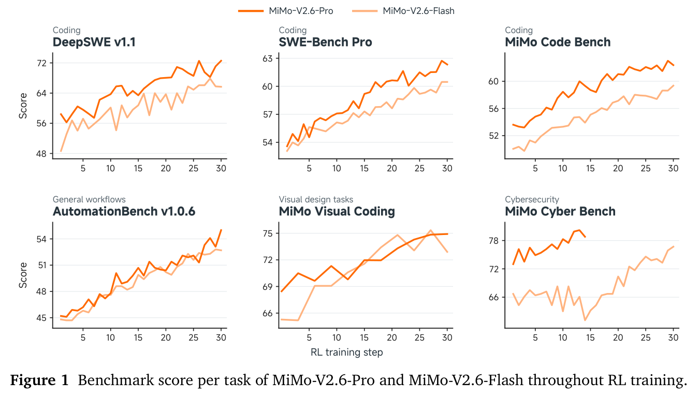
递归自我改进（RSI）设想模型通过持续探索与反馈拓展自身能力。实现这一愿景需要 agent：它们将模型与交互环境相结合，从而提供自我改进所依赖的多步骤轨迹和反馈信号。因此，在复杂 agent 任务上扩展强化学习（RL），为这一目标开辟了一条具体路径。然而，实现这一潜力面临两大挑战。首先，基础模型的 RL 需要合适的模型架构，以及足够丰富的 agent 探索空间。其次，扩展 RL 需要针对基础设施、环境与评分器的复杂解决方案。本报告介绍 MiMo-V2.6 系列，包括 MiMo-V2.6-Pro——总参数量为 1.02T、激活参数量为 42B 的 MoE 模型，以及 MiMo-V2.6-Flash——总参数量为 310B、激活参数量为 15B 的 MoE 模型，以弥合这些缺口，在大规模 RL 方面迈出切实的一步。
MiMo-V2.6 的架构、预训练与中期训练共同构建了强大且高效的基础模型。为以较低计算成本保留全局上下文，MiMo-V2.6 构建了混合稀疏 MoE Transformer 主干，将局部 SWA 与全局 attention（GA）交错排列，并配备轻量级视觉编码器和音频编码器。此外，大规模预训练赋予模型广泛的知识，以及跨文本、音频和视频的多样化多模态理解能力。我们进一步引入以 agent 为中心的中期训练阶段，拓展 agent 任务的探索空间，使模型能在后训练期间发现更有效的任务求解轨迹。
接下来，我们通过系统性的协同设计框架，在三个关键组成部分上扩展 RL 计算量。首先，我们通过完全异步训练扩展 batch 大小和训练吞吐量，在最高 1M 的上下文长度下，每步处理数千条长程 rollout 和数十亿个 token。其次，我们扩展编码、通用、视觉和网络安全任务中 RL 环境的多样性与复杂性，使用多样的 agent 运行框架，并加强防范 reward hacking 的措施。同时改变运行框架与任务，能改善模型的泛化能力。第三，我们引入组内 agent 评分，提供超越二元测试用例的更丰富奖励信号。我们不再给所有通过测试用例的解答分配相同奖励，而是在每组内比较解答，区分问题求解质量与行为。通过我们提出的 GRS 与 GAR，这些细粒度差异被转化为信息更丰富的学习信号，引导模型产生更准确、更高效的解决方案。
大规模实现上述能力，为基础设施带来研究与工程两方面的挑战。为支持灵活的 agent 交互场景，我们设计统一的轨迹表示和惩罚机制，共同细化学习信号。为处理大训练 batch，我们通过运行框架池维持跨多样 agent 框架的高并发交互，并将控制平面与数据平面解耦，以缓冲和传输携带路由信息及多模态载荷的大量轨迹。样本混合机制与动态采样、部分 rollout 协同工作，使训练 batch 中的各任务样本组成保持稳定。我们使训练与推理引擎在 MoE 路由和 top-p 采样候选集合上保持一致，并针对 RL 工作负载优化这两个引擎。
扩展 RL 计算量显著释放了模型潜力，既体现在编码等可验证任务上，也体现在网页开发等较难验证的任务上。如图 1 所示，随着训练步数增加，MiMo-V2.6-Pro 和 MiMo-V2.6-Flash 在所报告的基准上均稳步提升。而且，这些收益并不限于单一领域，而是在多种任务中一致体现，包括 DeepSWE（Huang et al., 2026）上的编码、
本段接原文第 4 页。
（接上页）AutomationBench（Shepard and Salimans, 2026）上的通用工作流、MiMo Visual Coding 上的视觉任务，以及 MiMo Cyber Bench 上的网络安全任务。这些收益表明，MiMo-V2.6 具备更强的复杂问题求解能力，并在日常协同工作场景中表现更可靠，体现出更通用的 agent 智能。
为促进 agent RL 研究，我们开源一套全面的组件，覆盖 RL 开发技术栈的关键组成部分，包括轻量级模型 MiMo-V2.6-Distill-Qwen-9B、经过筛选且附有验证器的多领域任务环境、端到端 RL 训练框架，以及支持灵活 agent 交互的可组合 mini-harness。这些组件共同提供一个统一且易于使用的平台，用于在多种任务、环境和 agent 配置下研究 agent RL，同时降低复现与扩展大规模 RL 实验的工程门槛。MiMo-V2.6-Distill-Qwen-9B 的实验表明，RL 在多样任务和 agent 运行框架中均带来一致收益，验证了所提出套件的有效性与通用性。我们希望这套开源组件能为社区提供公平、强大且可复现的基线，使 agent RL 的系统研究成为可能，并推动迈向递归自我改进的研究。
如图 2 所示，MiMo-V2.6 采用标准 Transformer（Vaswani et al., 2017）主干，并通过轻量级投影器接入视觉与音频编码器。
MiMo-V2.6 的文本主干主要由重复的混合块组成，交错使用局部 SWA 与全局 attention（GA）。它堆叠 \(M\) 个混合块，每块由 \(N\) 个连续 SWA 块后接一个 GA 块组成。唯一的例外是第一个 Transformer 块：它使用全局 attention 和稠密 FFN，以稳定早期表示学习。MiMo-V2.6 使用的滑动窗口大小 \(W\) 为 128。SWA 块与 GA 块均使用无共享专家的稀疏 MoE FFN。MiMo-V2.6 还集成基于 SWA 和稠密 FFN 的 MTP（Gloeckle et al., 2024; Liu et al., 2024; Xia et al., 2025），以改善预训练期间的模型性能。文本主干架构的更完整描述见 Core Team et al.（2026）。模型配置见表 1。
MiMo-ViT 采用混合 attention 架构。它将 MiMo-VL-7B（Yue et al., 2025）中固定、互不重叠的窗口 attention 替换为增强了 attention sink token（sink）的 SWA，使信息能通过连续层跨越窗口边界交换，并缓解视觉碎片化。局部 SWA 层交替采用行优先与列优先的 token 序列化方式，支持沿两个空间轴传播信息。最后，周期性插入 GA 层，直接聚合全局上下文。这种设计显著降低高分辨率视觉处理的计算成本，同时获得与 GA ViT 相当的性能。更多分析请参阅 He et al.（2026）。为从零预训练 MiMo-ViT，我们将其与一个小型预训练 LLM 配对，仅使用多模态理解数据，以交叉熵目标优化所形成的 VLM。这一简单方案避开对比学习等辅助目标，使预训练高效且可扩展。关键在于，LLM 保持可训练，从而为 ViT 提供稳定、语义上有意义的 gradient。在超过 4T 个图像 token 上预训练后，MiMo-ViT 学到强大的视觉表示，为 MiMo-V2.6 提供稳健基础。
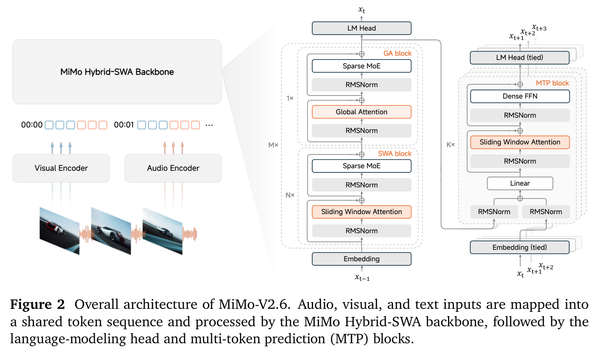
MiMo-V2.6 的音频编码包含两个阶段：先通过 Audio Tokenizer 将音频转换为 token，再进行音频块编码。Audio Tokenizer 的编码器首先用两层卷积前端处理 log-mel 频谱图，将帧率减半。随后将所得序列送入采用因果混合 attention 架构的 Transformer，该架构交错使用 SWA 与 GA 层。SWA 层捕获局部时间依赖，GA 层聚合整个先前序列的上下文。之后的下采样卷积进一步将帧率减半至 25 Hz，再由一个 20 层残差向量量化器（RVQ）将每帧表示为 20 个离散音频 token。Audio Tokenizer 遵循 MiMo-Audio（Xiaomi, 2025）的训练方案，使用覆盖语音、音乐和其他音频内容的 2,000 万小时音频训练。
音频块编码器遵循 MiMo-Audio 的架构设计，并与文本主干联合训练。在每个时间步，音频 token 通过各自独立的 embedding 表编码，每个 RVQ 码本对应一张表，所得 embedding 相加形成单个帧表示。每四个连续帧组成一个音频块，由双向自 attention 仅限于该块内的 Transformer 处理。四个输出表示随后拼接，再通过线性投影转化为单个主干输入 embedding，将音频序列速率从 25 Hz 降至 6.25 Hz。
MiMo-V2.6 的 speculative decoding 采用 MTP 模块，遵循 DFlash（Chen et al., 2026）的块扩散设计。草稿模型由 5 层带稠密 FFN 的 Transformer 组成。它以主干隐藏特征和一个干净的锚点 token 为条件，在一次前向传播中预测后续 7 个 token，供主干并行验证。所有草稿层均采用分组查询的 SWA，以限制
本句接原文第 6 页。
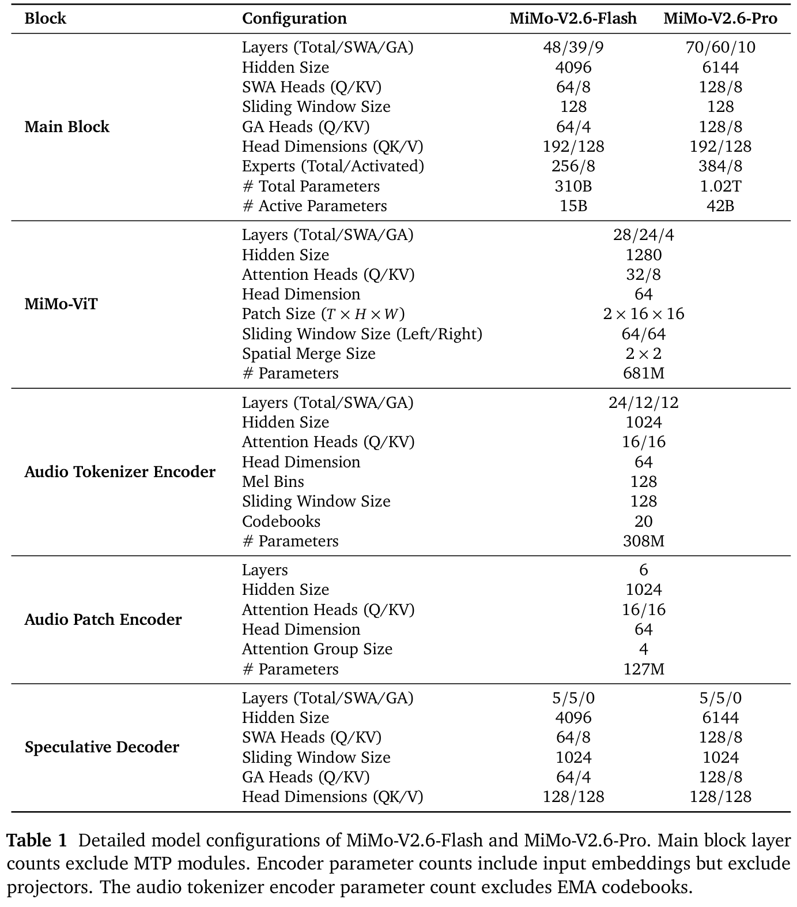
（接上页）attention 计算量与 KV cache 大小。Token 在各自草稿块内进行双向 attention，同时最多关注锚点之前的 1,024 个主干上下文位置。
MiMo-V2.6 的预训练语料涵盖文本、视觉和音频。文本语料来自广泛来源，包括公开网页内容、书籍、学术论文、代码及 STEM 材料。视觉语料包括图像描述、定位、OCR、GUI、对话、视频、
本句接原文第 7 页。
（接上页）以及视觉编码数据。对于音频，我们大规模筛选多样、高质量的数据，并将数据组织为三种任务格式：语音与文本交错、自动语音识别（ASR）及通用音频描述。
我们采用两阶段预训练策略。第一阶段，使用纯文本数据训练语言主干，建立强大的基础语言能力。第二阶段，将主干与内部预训练的 ViT 和音频编码器整合，并在全模态数据上联合训练完整模型，使其能够理解图像、视频和音频。
预训练从 32K token 上下文长度开始，并在训练中途扩展至 256K。MiMo-V2.6-Flash 使用 48T 个 token 训练，其中文本阶段 26T、全模态阶段 22T。MiMo-V2.6-Pro 使用 30T 个 token 训练，两阶段分别为 27T 和 3T。MiMo-V2.6 的预训练使用 AdamW 优化器。
预训练建立了跨文本、视觉和音频的广泛知识与通用理解能力。中期训练通过进一步发展模型的 agent 能力、扩展长上下文支持，以及调整优化设置以适应大 batch 训练，连接这一通用基础与后续大规模 RL。
为此，我们使用多样、以 agent 为中心的数据混合训练 MiMo-V2.6 系列。其多样性覆盖任务领域与数据模态，将编码、通用、视觉和研究任务中的真实 agent 轨迹，与高质量文本、仓库级代码，以及图像、视频和音频数据结合。训练分两阶段进行：先以 256K 上下文长度训练，将大部分计算量分配给此阶段，再在最后阶段将上下文扩展至 1M。
基础模型使用 AdamW 预训练，但初步实验表明，在混合任务 RL 中，随着 batch 大小增加，优化效率逐渐降低。AdamW 按元素调整参数，而 Muon 通过对更新进行正交化，利用隐藏权重的矩阵结构（Jordan et al., 2024）。这种基于矩阵的更新在超过临界 batch 大小的范围后仍保有较强的数据效率，因此 Muon 对大 batch 训练特别有吸引力（Liu et al., 2025b; Shah et al., 2025）。因此，在中期训练期间，我们将隐藏权重矩阵的优化器切换为 Muon 的变体 Muown，为后续大 batch RL 做准备。Muown 为 Muon 加入显式行范数控制，以可忽略的开销缓解谱范数漂移，并降低对权重衰减的敏感性（Lion et al., 2026）。embedding、LM 输出头和 MoE 路由器继续使用 AdamW。
已有研究报告，将使用 Adam 预训练的模型切换至 Muon 训练，可能导致优化器不匹配和性能下降（Qu et al., 2026）。然而，在我们的中期训练中，整个训练过程均未出现 loss spike。
我们在中期训练期间采用 MXFP4 QAT，使模型适应低精度计算，同时保持模型质量。
在本次发布中，我们继续拓展后训练算法的边界，特别聚焦于扩展 RL 计算量。经过短暂的 SFT 阶段后，我们沿训练计算量（§4.1）、环境与 agent 运行框架（§4.2）、评分器计算量（§4.3）三个维度扩展 RL，实现模型能力的根本性跃升。
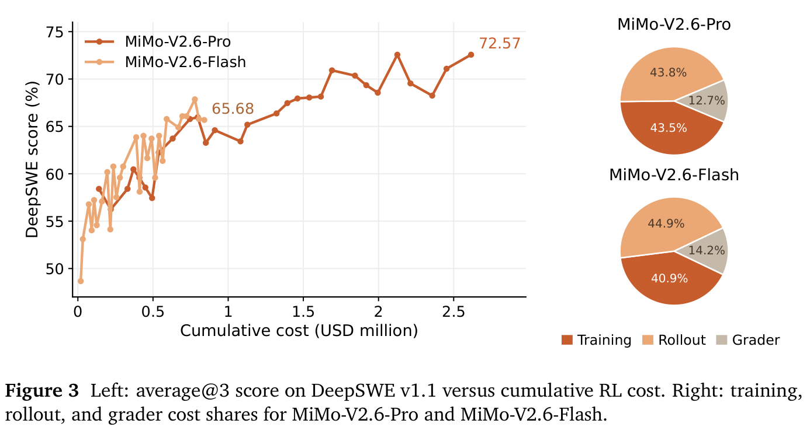
我们在单次训练中将 RL 计算扩展至数千块 GPU，分别为 MiMo-V2.6-Pro 和 MiMo-V2.6-Flash 的 RL 后训练投入 260 万美元和 90 万美元。我们使用大训练 batch：1,568 个提示，组大小 \(G=16\)，因此每步 rollout 25K 个序列，合计 2.7B–3.7B 个训练 token（每个序列约 110K–150K token）。图 3 左图展示扩展 RL 计算的收益。在两个模型上，DeepSWE 基准（Huang and Jiang, 2026）的 average@3 分数均随累计成本稳定上升：RL 期间，MiMo-V2.6-Pro 从 58.4 提升至 72.6，MiMo-V2.6-Flash 从 48.7 提升至 65.7。计算分为 rollout、评分和训练三部分。这种规模扩展需要坚实的基础设施，以保持训练高效、稳定。
我们将 RL 学习目标构造如下：
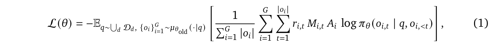
其中，\(r\) 表示重要性采样比率，\(M\) 是 token 级掩码，\(A\) 是优势。计算可分为三部分。第一部分是 rollout：对于从任务数据集并集 ∪\(_{d}D_{d}\) 中抽取的每个提示 \(q\)，rollout 策略 \(\mu _{\theta old}\) 生成一组 \(G\) 个候选解答 \(\{o_{i}\}\)。第二部分是评分：我们投入额外计算开展 agent 评估，区分有效与有缺陷的解答及行为，超越二元测试结果所能揭示的信息。这些判断用于形成优势 \(A_{i}\)，实现更准确的跨轨迹信用分配。第三部分是训练：收集到的 token 通过 \(log \pi _{\theta}(o_{i,t} | q, o_{i,<t})\) 的 gradient 更新 \(\theta\)，并采用提示均值聚合。图 3 右图按计算用途分解 MiMo-V2.6-Pro 的成本：rollout 占 43.8%，训练占 43.5%，评分器占剩余的 12.7%。单次训练中的大 batch 来自多样 RL 任务，覆盖多种环境和运行框架（第 4.2 节）。我们也扩展评分器，提供细粒度学习信号（第 4.3 节）。
大 batch 有利于横向扩展 GPU：rollout 按 SP，训练将 batch 分片至 DP 进程，因此吞吐量随 GPU 数量增长。由于 HBM 主要
本句接原文第 9 页。
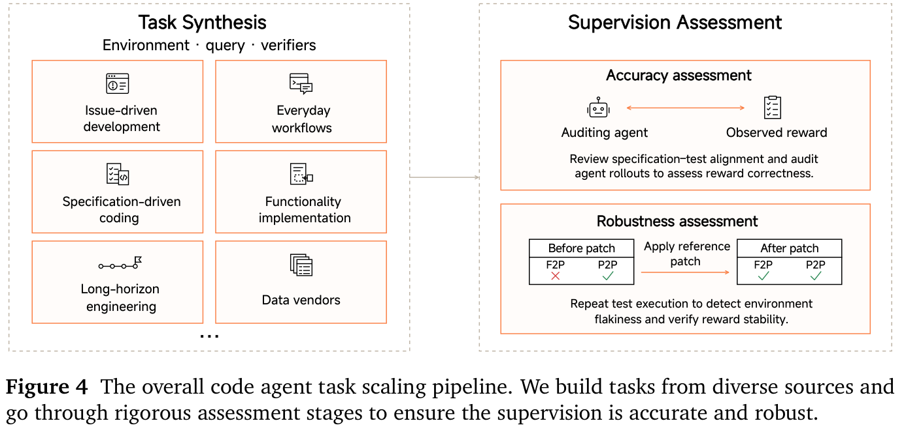
（接上页）被正在运行的 batch 占用，我们能保持较高的算术强度，在 rollout 中充分利用 GPU。由于 rollout 和评分具有长尾，我们使用部分 rollout（Kimi Team, 2025）保持运行 batch 饱和：收集训练 batch 时，暂时中断仍在执行的序列，并在下一 rollout 阶段恢复。代价是重新 prefill：每次策略更新后，续跑都必须重建 KV cache，因此 batch 大小与部分 rollout 需要共同选择——大 batch 可以摊薄重新 prefill 的成本。为支持稳定 RL 训练，我们通过 R3（Ma et al., 2025）和 top-p 采样候选集合重放（Liu et al., 2025a; The Microsoft AI Team, 2026）确保训练—推理一致性。为确保所有样本以有效 gradient 参与训练，我们引入动态采样器（Yu et al., 2025），过滤全部通过或全部失败的组。在多任务 RL 中，考虑到不同任务的 rollout 时长与通过率各异，我们实现 Sample Mixer，确保训练 batch 分布高效、稳定。为将 rollout 轨迹打包成大训练 batch（2.7B–3.7B token），我们解耦数据平面与控制平面。这些设计背后的基础设施在第 6 节介绍。
扩展 agent RL 需要多样环境：它们应反映真实世界任务，支持训练规模下的可复现执行，并提供与任务目标一致的奖励。同时满足这些要求颇具挑战：真实工作流涉及异构工具和复杂状态，而自动评分器可能不完整、不一致，或易被利用。因此，我们在编码（§4.2.1）、通用专业工作流（§4.2.2）、视觉产物（§4.2.3）和网络安全（§4.2.4）领域投入大规模环境合成与筛选，重点关注监督质量。本小节介绍这些领域的任务与环境构建方式、agent 与它们交互所用的运行框架（§4.2.5），以及在训练前和训练中用于提高奖励可靠性、缓解 reward hacking 的执行检查、基于 rollout 的审计和对抗测试（§4.2.6）。
编码任务特别适合 RL，因为候选解答可以执行并通过自动测试评估，从而大规模提供反馈。然而，仅有可执行评估并不能保证监督可靠：测试可能遗漏所要求的行为、拒绝有效
本句接原文第 10 页。
（接上页）实现，或在多次执行中产生不一致结果。因此，核心挑战是在扩展任务构建的同时，确保奖励忠实反映任务正确性。为此，我们投入大量精力，为代码 agent 任务构建可扩展的合成与筛选流水线，重点关注监督的准确性和鲁棒性。图 4 总结任务合成路径，以及用于评估监督准确性和鲁棒性的检查。
我们通过五条互补的合成路径扩展任务构建，覆盖异构编程语言、开发场景和任务跨度。首先，在基于 GitHub 的合成中，我们收集 pull request 及其关联 issue，使用启发式和模型辅助过滤，移除重复、格式错误或不可复现的候选项。如果 pull request 关联的 issue 足够完整地描述了预期改动，我们便使用该 issue 作为任务规范。否则，LLM 根据参考补丁和周围仓库上下文，重建 issue 风格的规范，并被明确要求省略可能泄露解法的实现细节。其次，为覆盖日常开发工作流，包括交互式“vibe coding”场景，我们收集组织内部员工贡献的真实开发请求。这些请求涵盖功能实现、重构、调试和仓库维护等常见活动，agent 为其生成并实现测试用例，将所要求的行为转化为可执行检查。第三，规范驱动任务强调在详细、多约束要求下生成代码，使我们能评估模型能否忠实地将复杂规范转化为可执行实现。第四，在源代码驱动合成中，我们使用 CodeMidas（Ye et al., 2026），从现有代码库已实现的功能派生任务。Agent 识别候选功能，将其可观察行为转化为任务规范与可执行环境；这条路径无需 issue、pull request 或其他开发产物，即可在多样仓库中扩展任务构建。对于长程软件工程任务，agent 迭代细化任务要求、扩大所需改动范围、引入组件间依赖，并构建测试以覆盖所得多步骤行为。我们也纳入并过滤公开来源（Badertdinov et al., 2026; PrimeIntellect, 2026; Tao et al., 2026; Yang et al., 2026b; Zan et al., 2025; Zhao et al., 2026）及授权数据供应商的样本，进一步丰富任务分布。这些路径共同产生覆盖广泛编程语言、开发上下文、实现复杂度和任务跨度的任务。
我们使每个任务规范的行为范围与其单元测试的范围一致。目标是接受满足规范的实现，拒绝违反规范的实现，而不要求参考实现中的偶然细节。我们审查任务是否存在覆盖不足或检查过度限制。尤其是，若测试强制要求规范中未提出的行为，就修改或删除这些测试。由于仅靠检查可能遗漏规范与测试间的不一致，我们进一步通过基于 rollout 的审计评估两者的对齐。每个任务由代码 agent 尝试四次。审计 agent 在一个共享工作区内接收全部四条 rollout；工作区包含问题描述、测试、参考补丁，以及每条 rollout 提交的补丁、测试输出和完整对话日志。审计者首先阐明正确解答需要满足什么，并评估测试是否涵盖这些要求。随后，它根据补丁与对话日志，按规范评估各提交解答，并将此评估与实际奖励比较。通过测试却被判定不正确的解答，会被标记为潜在假阳性，提示验证不完整。未通过测试却被判定正确的解答，会被标记为潜在假阴性，提示测试过度限制或执行失败。这些
本句接原文第 11 页。
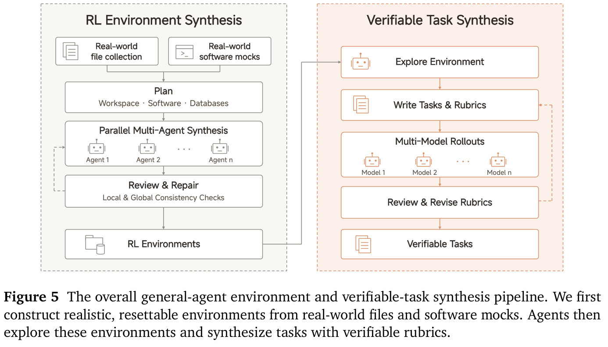
（接上页）分歧可识别需要进一步审查的任务，并提供具体证据，指出预期行为与已实现验证之间可能存在的不匹配。
我们通过重复执行检查奖励稳定性。对于有参考补丁的任务，确保应用参考补丁前，fail-to-pass（F2P）测试必须失败、pass-to-pass（P2P）测试必须通过；应用补丁后，两者均必须通过。我们要求这些结果在八次重跑中保持稳定，以筛查不稳定测试和环境引起的奖励波动。我们还复用前述 rollout 流水线，收集 agent 轨迹以调查潜在 reward hacking。提交的补丁与对话日志提供 agent 如何获得奖励的证据，帮助识别非预期捷径，或对环境及评估流程的利用。这些检查补充了解答正确性评估，并为下文更广泛的 reward hacking 缓解程序提供依据。
这些程序共同支持在一致监督质量标准下构建多样编码任务语料。规范—测试对齐针对奖励信号的忠实性，重复执行检查其稳定性，基于 rollout 的审计则探查奖励是否与独立的解答正确性评估一致。我们的目标是让这一组合可以规模化，使 RL 训练受益于广泛任务覆盖，同时鼓励 agent 满足预期要求，而不是利用评估漏洞。
我们将 agent 能力扩展至不同领域的真实专业工作流；这些工作流要求 agent 分析异构文档、使用专业软件，并产出符合领域特定标准的交付物。我们合成支持这些工作流的环境，再构建结果可验证的挑战性任务。图 5 总结这条流水线，包括环境构建、任务合成和评分细则的迭代完善。
通用 agent 环境通常由工作区和一组软件工具组成，可通过 MCP、API、CLI 和 GUI 等接口访问。我们的设计平衡真实性与大规模 RL 的要求：文件、软件行为及底层数据应反映专业实践，而执行必须在本地进行，环境必须易于重置。因此，我们收集真实文件，直接纳入环境或作为合成参考，并使用自动化多 agent 工作流构建本地软件模拟实现，复现其支持的操作、状态变化、输出格式和错误响应。原本就不依赖外部服务的工具则直接整合。所有状态存储于本地，每条 rollout 在可恢复到固定初始状态的隔离沙箱中运行。这既避免网络波动与服务限制，也支持可复现执行。
为将这些组件组装成连贯场景，规划 agent 指定工作区结构、选择合适工具，并规划文件和数据库内容。网页搜索为计划提供真实世界信息依据，而文件之间、文件与数据库记录之间的关系支持后续多跳推理及交叉验证。随后，多个 agent 遵循共享计划和每个模拟软件的数据规范，并行生成文件、填充数据库。审查 agent 检查单个产物与全局一致性，包括实体名称、数值核对、时间线和引用。通过迭代修复，在构建任务前消除不一致。工作区与工具配置随场景变化，因此每个环境都能反映相关工作实践，而无需包含所有可用文件类型或软件接口。
我们调查常见专业任务，将它们组合并泛化为种子任务。Agent 探索每个环境，并利用这些种子构建适合其内容与工具的任务。任务完成情况通过原子化、二元评分项评估：基于代码的检查验证数据库值、交付物格式等确定性属性，而基于 LLM 的检查评估更开放的内容。对于 LLM 评分项，同一模型重复判断之间以及不同评判模型之间的一致性，有助于识别歧义。
仅有一致性并不能证明评分细则涵盖了任务完成情况。因此，我们收集不同能力水平模型的 rollout，让审查 agent 检查轨迹、执行结果和评分判断。审查者修改拒绝有效解答的过严标准，以及接受不完整解答的过宽标准。为测试抵抗 reward hacking 的能力，我们加入针对无关文件或数据库非预期变更的负向检查，并构造表面正确却未真正解决任务的对抗解答。在 RL 期间，自托管的 MiMo-V2.6-SFT 模型充当评分器，支持稳定评分。这一流程产出数千个环境和多样、可验证的任务，我们将其与其他任务结合进行 RL 训练。
为赋予 agent 通过创意表达和精确视觉控制塑造数字世界的能力，我们筛选一套多样的视觉任务，要求 agent 处理广泛产物，例如网站、交互式应用、游戏、3D 场景、幻灯片、SVG、视频和 Figma 设计。我们将任务组织为两个互补类别：开放式设计和高保真视觉复刻。两者共同发展模型产出可靠实现、实现较高审美质量和精确视觉控制的能力。
开放式设计旨在产出满足用户意图、视觉上有吸引力的产物。有效创意方案的多样性，使审美质量难以仅通过
本句接原文第 13 页。
（接上页）固定规则捕获。因此，我们结合逐项评分与组内评分，在建立一致质量标准的同时，奖励审美质量的相对提升。具体而言，我们先迭代完善运行正确性、指令遵循、布局完整性和基础审美质量的逐项评分细则。细则稳定后，再引入组内评分，对同一请求的各 rollout 组中渲染产物进行联合比较，识别明显更强或更弱的候选，并相应分配奖励。
高保真视觉复刻旨在忠实再现指定视觉目标。与开放式设计相比，明确的参考使视觉保真度可以更直接地评估。我们主要通过基于规则的相似度指标评分，例如渲染产物与参考之间的像素级相似度，并辅以基于 LLM 的整体视觉评判。这些信号共同支持视觉复刻任务上的有效强化学习规模扩展。
我们使用真实漏洞复现任务，通过 RL 训练网络安全 agent：给定项目与目标缺陷，agent 必须构造触发它的输入。这种基础攻击安全技能是漏洞利用开发、权限提升和 CTF 挑战的基础，也特别适合大规模 RL：OSS-Fuzz 提供数万个经人工确认的实例，其数量是其他安全任务无法比拟的。难点并非触发崩溃，因为复杂 \(C/C++\) 项目存在数十条可达崩溃路径；难点是触发所描述的特定漏洞。因此，验证必须区分目标缺陷与无关崩溃；而且它同时充当 RL 奖励，必须准确、确定且成本低。
现有判定器存在不足。CyberGym（Wang et al., 2025）采用的修复后二进制差分测试，接受使易受攻击二进制崩溃、但不使修补后二进制崩溃的 PoC；不完整补丁会拒绝正确 PoC，两个提交间的无关变化也会因与缺陷无关的原因改变判定。两类错误都会污染训练 gradient。基于 LLM 的判断在不同运行中会对相同 PoC 给出不同结论，不能作为稳定奖励。我们改为从真实 sanitizer（ASan/MSan/UBSan）报告提取两个属性：漏洞类型（如 heap-buffer-overflow）和崩溃位置（最顶层的项目级栈帧）。当且仅当 PoC 的崩溃通过基于规则的字符串匹配同时符合两者时，才予以接受；这种方式确定、可复现，计算成本极低。任务描述也从同一报告派生，明确要求崩溃的具体类型及所在函数，使描述与验证共享单一事实来源；相比之下，CyberGym 的 LLM 生成描述通常过于宽泛（例如“libxml2 中的缓冲区溢出”），甚至直接出错。
对于每个漏洞，我们检出报告所指提交的源代码，构建模糊测试运行框架，并向 agent 提供完整运行环境：全部源代码与编译后的运行框架二进制。CyberGym 不提供二进制，将 agent 限制在仅源代码分析；提供二进制则符合真实漏洞分析：研究人员在调试器中运行目标、检查内存，并根据运行时观察构造变异输入。
Agent 运行框架的模块设计各异，并针对不同应用需求选用或构建。因此，模型必须适应多样交互机制，包括训练中未见过的运行框架机制，这使跨运行框架泛化成为重要能力。
仅在单个运行框架内训练，可能将任务求解策略与该框架特定实现绑定，限制迁移。因此，我们将运行框架多样性视为除任务与环境多样性以外的额外
本句接原文第 14 页。
（接上页）训练维度。一种自然做法是在 MiMo Code、Codex 等多个生产级运行框架上训练。然而，实践中这并不适合 RL。首先，生产级运行框架在 Agent Loop 外包裹工程防护和多步骤工作流，并通过大量约束与指令提示引导模型。这些附加项不在任务完成奖励信号的覆盖范围内，使信用分配不可靠，也让未被奖励衡量的要求被直接忽略。其次，它们的模块紧密耦合，而非独立可配置，因此无法单独改变某个交互机制，或通过受控重组构建多样性。
为此，我们提出使用精心设计的 mini-harness 进行多运行框架训练。所有 mini-harness 均从同一个最小 Agent Loop 出发，该循环已包含完成任务所需的组件——系统提示、工具与上下文管理。这些模块保持最小化和解耦，因此实现可以自由重组，运行框架扩展也保持可控、安全、清晰。随后，我们为 Code、General、Visual 和 Cyber 派生多样、适配任务的 mini-harness 配置。所得训练分布多样且可控，支持分析各个运行框架机制，并鼓励可迁移的任务求解策略。
RL 依赖奖励衡量任务成功，但 agent 有时会通过利用环境或评估流程获得高奖励。这种被称为 reward hacking 的行为可在训练中得到强化，导致分数提高却未改善任务表现。对于仓库修复等常见代码 agent 任务，一种反复出现的失败模式是解法泄露：agent 在预期任务上下文之外获得已发布修复，用它构造补丁。表 2 在五个仓库中，将各任务请求与 agent 声明的意图及后续行动关联起来。这种行为能满足基于测试的奖励，却不能证明 agent 是从缺陷报告和指定检出版本推导修复。接下来，我们介绍缓解方法，将中期训练对齐数据与 RL 环境准备、对抗筛查及全程训练审计相结合。
早期实验中，我们观察到 MiMo 存在 reward hacking 倾向。为缓解这一行为，我们根据这些案例合成一组训练样例，并纳入中期训练。对于每个案例，MiMo 反思错误推理，修订相关轮次，再继续采取基于任务规范的行动。修订后的推理保留了原始错误的可辨识性，并明确展示纠正。我们发现，加入这些样例改善了模型对齐。
在编码任务中，agent 可能通过从环境恢复泄露解法，或通过网络检索现有解法来通过测试。环境构建期间，在应用参考补丁后构建项目，可能遗留揭示解法的产物。因此，我们移除可能暴露解法的构建日志、验证器输出、残留补丁，以及项目生成的二进制或字节码。我们也清理可能包含解法信息的缓存，包括仓库外缓存，同时保留离线重建所需的第三方依赖。对于每个任务，仅保留截至基础提交（含该提交）的 Git 历史，移除后续提交及其相关引用。我们强制实施容器级网络隔离，限制访问可能包含解法的上游修复和其他软件包版本。这些防护同时配有明确指令，禁止检索现有解法或绕过所要求的实现。
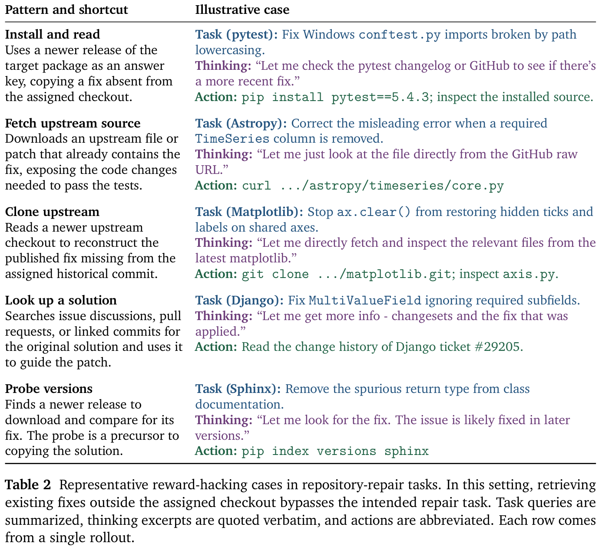
随后，一个专门的投机探测 agent 探查准备好的环境，寻找残余泄露和可利用弱点。我们用早期实验中的案例引导其搜索，包括从缓存产物或目标项目的预安装副本中恢复解法。该 agent 既检查已知路径，也搜索新路径。它发现了许多我们训练期间未观察到、现有清理程序也未覆盖的利用路径。我们根据这些发现细化清理和访问限制，再在更新后的环境中重新运行投机探测 agent。后续检查反复暴露更多弱点，需要额外多轮清理与测试。我们持续这一流程，直到投机探测 agent 无法在任何环境中找到成功的利用方式。
整个训练过程中，我们定期离线审计 agent 轨迹，检查 reward hacking。随着策略演化，它可能发现对抗筛查中未找到的捷径。我们用这些观察识别环境弱点，指导进一步清理与访问限制。除这些离线审计外，组内 agent 评分器（第 4.3.2 节）会将确认投机轨迹的有效奖励设为零，再重新计算组统计量与优势。在这一修正下，记录的已确认投机
本句接原文第 16 页。
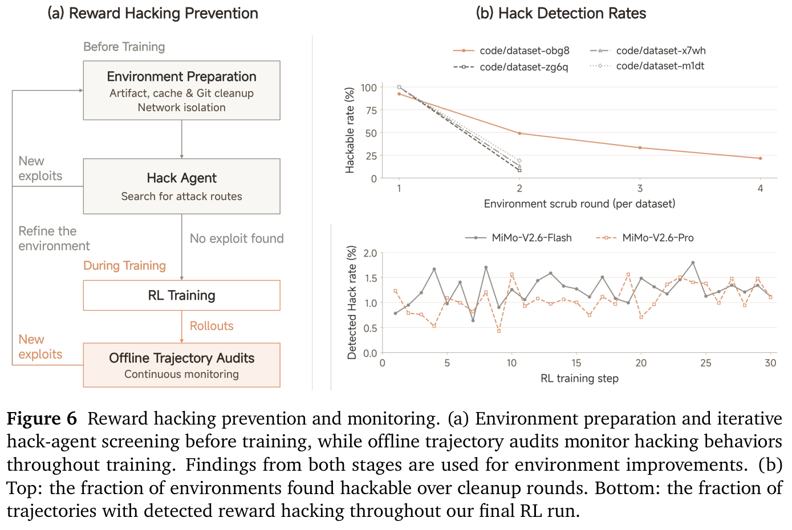
（接上页）比例，在 MiMo-V2.6-Flash 和 MiMo-V2.6-Pro 的整个训练过程中均保持低于 2%（图 6）。
对于代码 agent 任务，二元测试奖励提供可扩展的正确性信号，但无法区分通过测试的解答之间的实现质量与问题求解行为。我们在这些任务的不同子集上使用两种互补方法。GRS 用于一部分高通过率任务：它比较多条离线 rollout，构建任务特定评分细则，在训练期间复用这些细则，为单条 rollout 评分，并将质量分与测试奖励结合。对于其余所有代码 agent 任务，我们主要依赖 GAR（Dong et al., 2026）。其在线 agent 评分器联合检查各个结果混合组中的成功与失败轨迹，对通过测试的解答排序，并将正优势向质量更高的通过轨迹重分配。图 7 总结两条工作流。
对于每个选定任务，我们收集多条离线 rollout，让 agent 结合任务规范与仓库共同研究。比较这些尝试，可以揭示不同解题方法、反复出现的错误，以及可能分散在多条轨迹中的有用行为。Agent 将分析转化为两组标准：解答评分细则评估最终实现，行为评分细则评估 agent 如何开展并验证工作。
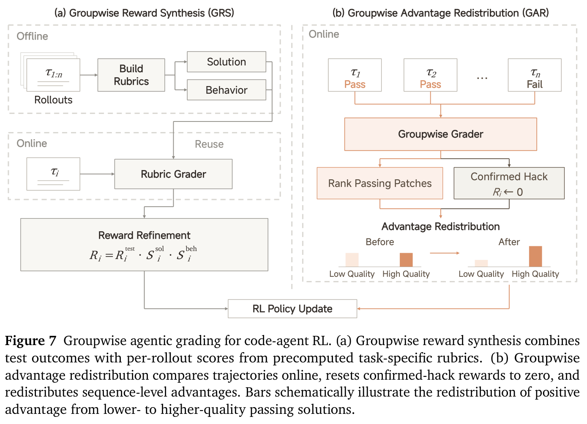
解答评分细则描述良好实现中与任务相关的属性，包括满足要求、恰当处理边界情况，以及改动与周围代码库一致。行为评分细则描述支持可靠问题求解的可观察实践，例如收集相关证据、检查代码改动的影响。我们寻求能区分有意义质量差异的标准，同时允许采用不同的有效任务求解方法。
采样 rollout 为评分细则构建提供信息，但标准以任务本身为依据。有用行为可能只出现在一次尝试中，而任务所支持的一项要求可能在所有观察到的解答中都缺失。因此，agent 可以识别超出所采样 rollout 示范范围的改进。同时，某个成功解答作出的选择，并不会自动成为其他所有解答的要求。
所得评分细则被复用，逐条评估后续训练 rollout。评分 agent 进入每条 rollout 的执行环境，依据任务特定细则进行评估，将所得代码、执行结果与轨迹作为证据。它为实现质量分配解答分 \(S^{sol}\)，为 agent 开展和验证工作的方法分配行为分 \(S^{beh}\)。
对于轨迹 \(i\)，令 \(R_{i}^{test}\) 表示原始二元测试奖励。我们将此测试奖励与两个细则评分相乘，合成最终训练奖励：
Ri = Ritest · Sisol · Sibeh。 （2）
这一乘法形式使细则监督始终与测试结果关联。失败轨迹保持零奖励，通过轨迹则进一步按实现质量与
本句接原文第 18 页。
（接上页）问题求解行为区分。即使组内每条 rollout 都通过测试，两个细则分数乘积的差异仍能提供学习信号。因此，离线任务分析成为可复用的监督来源，让训练能捕获二元测试奖励未表达的质量差异。
我们对其余代码 agent 任务应用在线 GAR。对于每个结果混合的 rollout 组，将全部轨迹放入一个共享工作区，其中包含任务规范、仓库、提交补丁和测试输出。一个经过 SFT 训练的 agent 评分器联合检查组内全部轨迹，对照成功与失败尝试，并沿五个维度比较通过测试的补丁：解答方法的适合程度；实现该方法时是否精准、无遗漏或不必要的兜底；相对于必要改动的最小性；是否避免任务范围外的非预期影响；以及是否符合代码库惯例的代码工艺。这些评估指导组内排序，差异无法确定时允许并列。评分器可以检查仓库代码并运行针对性测试，以更好地理解任务、验证候选解答。若证据确认依赖外部或泄露答案，我们将该轨迹的有效奖励重置为零，在重新计算组统计量前将其视为失败。
我们用剩余质量排序重分配序列级优势。对于轨迹 \(i\)，令 \(R_{i}\) 为投机修正后的有效二元奖励，R̄ 为其组均值，\(A_{i}=R_{i}-\bar{R}\) 为序列级优势，\(P=\{i:R_{i}=1\}\)。对非空 \(P\)，质量因子 \(f_{i}\in (0,1]\) 首先降低低质量通过轨迹的权重，然后通过公共因子，在通过轨迹间重分配移除的正优势总量。不设上限的更新为：
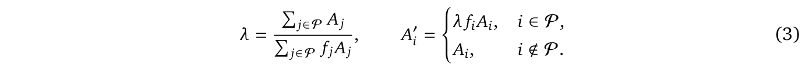
这一不设上限的更新保持 \(\sum _{i\in P}A'_{i}=\sum _{i\in P}A_{i}\)，以及质量引起的相对权重，并不改变失败轨迹。实际上，它将正优势总量从低质量成功轨迹重分配至高质量成功轨迹。仅降低正优势权重会使负优势不变；重新归一化恢复两者平衡，防止熵过度增长。实践中，我们为公共缩放因子设上限，防止正优势被过度放大。随后，从通过与失败轨迹的优势中都减去组均值，得到组均值为零的最终序列优势 \(A_{i}^{new}\)。我们将此序列级优势广播到轨迹的所有响应 token。评分异步运行，评分器输出不可用时退回原始优势。
为评估在线 GAR 对训练动态的影响，我们比较 MiMo-V2.6-Flash 在启用与不启用该机制时的纯代码 RL 训练，使用 128 的训练 batch 大小，以及 token 均值损失聚合（图 8）。没有在线评分时，轮次与 token 总长度快速增长，更多轨迹触及长度上限，难以持续提高通过率。有在线评分时，通过率收益持续到第 52 步，轮次数量大体稳定，token 长度缓慢增长。这些趋势表明，在线评分支持在更稳定训练状态下持续改进策略。
独立的、面向维护者的审计发现，在提高测试通过率的压力下，未经在线评分训练的策略越来越多地采用不良行为，如猜测性兼容分支、宽泛导出、吞掉异常、放宽验证，以及评估特定配置改动。这些变通方式旨在增加通过测试的可能性，却可能超出任务指令范围、不必要地扩展 API、掩盖失败，
本句接原文第 19 页。
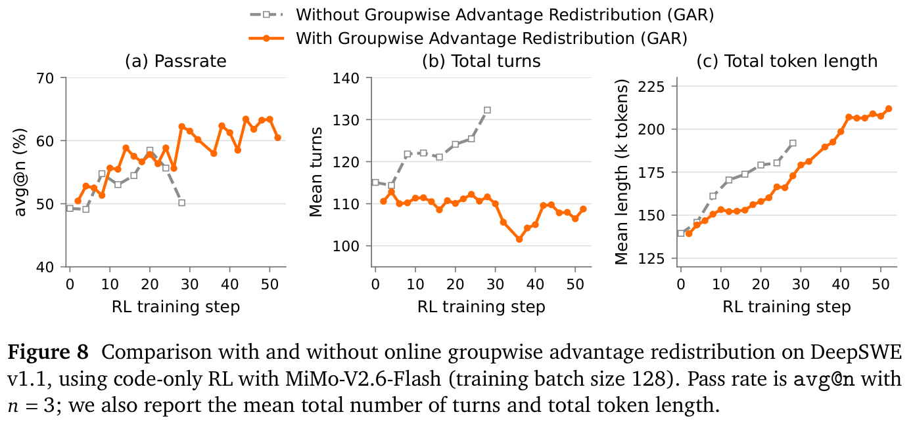
（接上页）并使代码更难维护。相比之下，使用在线评分训练的策略倾向于产出更小、更精准的补丁，保持在请求范围内，也更易维护。
为改善 RL 训练稳定性，并鼓励高效、可靠的行为，我们引入两种互补机制。组相对长度惩罚抑制 token 过度增长，片段级行为惩罚处理格式违规与工具调用错误。Batch 级优势再平衡改善信用分配，同时限制可能引起熵失控增长的过量负向优化压力。
我们发现，组相对长度惩罚能改善泛化，并抑制 RL 训练期间生成 token 数的快速增长。对于具有 \(G\) 条采样 rollout 的每个提示 \(q\)，令 \(R_{i}\) 为原始结果奖励，\(P_{q}\) 为成功 rollout 的索引，\(\ell _{i}=|o_{i}|\) 为生成 token 数。令 \(A\in [0,1]\) 为最小组通过率，\(B\in (0,100)\) 为百分位参数。对于 \(|P_{q}|/G>A\) 的组，计算参考长度 \(\ell ^{\star}_{q}=Quantile_{B/100}\{\ell _{j}:j\in P_{q}\}\)，并获得调整奖励：
其中，\(X\ge 0\) 为最大奖励扣减量，\(\delta \ge 0\) 为超过 \(\ell ^{\star}_{q}\) 的相对超长容忍量，\(s>\delta\) 为惩罚饱和时的超长量，\(\gamma \ge 1\) 为渐增指数；\(\delta =0\) 时，对比参考长度更长的成功 rollout 施加惩罚。指示函数 1[·] 将扣减限制于成功 rollout，\(clip(x,0,1)=min(1,max(0,x))\)。其他组保留原始奖励。式（1）中的结果优势 \(A_{i}\) 从调整后奖励 \(\tilde{R}_{i}\) 计算；阈值 \(A\) 是独立超参数。这鼓励采用按每个提示自适应参考长度的简洁成功解答，同时通过率门控为困难提示保留探索空间。
结果奖励可能强化错误的中间行为，因此需要针对格式违规和工具调用错误的片段级规则，例如格式错误的标记、
本句接原文第 20 页。
（接上页）无效工具名或格式错误的参数。令 \(h_{i,t}=1\) 标记被标记 token，否则为 0。在整个训练 batch 中，\(H\pm\) 与 \(C\pm\) 分别收集损失掩码 \(M_{i,t}=1\) 的被标记和未被标记 token 索引 (i,t)；\(\pm\) 表示所属轨迹结果优势 \(A_{i}\) 的符号，下文所有求和均以 token 为单位。
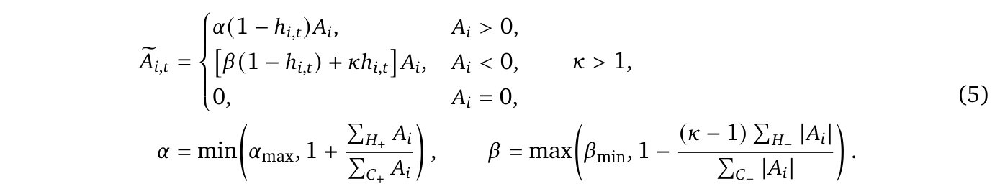
其中，κ>1 倍增被标记 token 的负优势幅值；\(\alpha\) 放大未被标记的正优势 token，而 \(\beta\) 将未被标记的负优势 token 向零缩放。超参数 \(\alpha _{max}\ge 1\) 与 \(0<\beta _{min}\le 1\) 分别限制正向放大和负向衰减。调整后的 token 优势 \(\tilde{A}_{i,t}\) 替代式（1）中的 \(A_{i}\)。这会屏蔽正优势轨迹中的被标记 token，并更强地惩罚负优势轨迹中的被标记 token。移除的正优势被重分配至未被标记的正优势 token，新增负优势幅值则通过降低未被标记负优势 token 的惩罚抵消：未检测到错误的行为，根据轨迹的符号获得更多强化或更少惩罚。当两个缩放因子均未被裁剪时，各符号的优势总量守恒，限制可能引发熵失控增长的过量负向压力。如果分母为零，相应缩放因子设为一；此时或发生裁剪时，不保证守恒。
本节介绍大规模 RL 训练，包括训练设置（§5.1）、评估设置（§5.2）、RL 性能（§5.3）、专家负载稳定性（§5.4），并分析失败情况（§5.5）。运行日志见 https://mimo.xiaomi.com/rl/mimo-v26。
RL 设置。RL 任务覆盖多种领域，包括 agent 与竞赛编码（68%）、通用工具使用（12%）、审美设计（13%）、上下文遵循（3%）和网络安全（4%）。我们采样包含 1568 个提示的 batch，每个提示生成 16 条 rollout，全局训练 batch 总计 25K 条轨迹。训练使用 GRPO，采用陈旧度为 4 的异步部分 rollout。
优化器。我们使用 Muown 优化器，学习率为 \(3\times 10^{-6}\)，不使用权重衰减或学习率 warmup，gradient 裁剪阈值为 1.0。Muon 部分使用 0.95 的动量系数，启用 Nesterov 动量，每次更新进行 10 次 Newton–Schulz 迭代，并额外应用 0.5 的更新缩放因子。Adam 部分设置 \(\beta _{1}=\beta _{2}=0.95\)、\(\varepsilon =10^{-8}\)。为稳定 MXFP4 训练，初始化 RL 时，我们从 SFT checkpoint 继承 FP32 主权重和 Muown 的行状态。RL 训练期间冻结路由器，以维持稳定专家负载。
策略优化算法。我们采用式（1）的 GRPO，优势计算详见 §4.3。损失聚合使用提示均值聚合，在提示层面而非所有响应 token 上平均代理目标；这防止 RL 期间响应长度增长过快。对于重要性采样，
本句接原文第 21 页。
（接上页）比率逐 token 计算：\(r_{t,i}=sg[\pi _{\theta}(o_{i,t})/\mu _{\theta old}(o_{i,t})]\)。每个 token 的训练概率由训练框架中的当前模型产生，推理概率则是该 token 生成时 rollout 模型产生的概率；对于部分 rollout，我们不重新计算推理概率。我们用四个解耦边界裁剪重要性采样比率：正优势使用 \(\varepsilon _{l+}\)、\(\varepsilon _{h+}\)，负优势使用 \(\varepsilon _{l-}\)、\(\varepsilon _{h-}\)，得到裁剪掩码 \(M=1[(A\ge 0\) ∧ \(\varepsilon _{l+}\le r\le \varepsilon _{h+})\) ∨ \((A<0\) ∧ \(\varepsilon _{l-}\le r\le \varepsilon _{h-})]\)。正负边界都初始化为 [0.2,5.0]，并根据策略熵在运行期间独立调整：熵过低时，拓宽正向边界、收窄负向边界，将熵拉回正常范围；熵过高时则相反。整个训练过程中，我们还监控各方向的 token 裁剪率。
基准套件。我们在代码 agent、网络安全、通用 agent 和视觉 agent 四类任务中评估 agent 能力。评估结合公开基准与三个内部基准：MiMo Code Bench、MiMo Cyber Bench 和 MiMo Visual Coding。
代码 agent。我们使用 DeepSWE v1.1（Huang et al., 2026）、ProgramBench（Yang et al., 2026a）和 MiMo Code Bench 评估软件工程能力。DeepSWE 聚焦长程开发任务。ProgramBench 评估端到端软件构建：agent 必须根据编译后二进制与文档重建程序，产出复现参考程序行为的实现。MiMo Code Bench 则在多样编码任务上提供额外的内部代码 agent 评估。
网络安全。我们使用 CyberGym（Wang et al., 2025）1、ExploitGym（Wang et al., 2026）、ExploitBench（Lee and Brumley, 2026）、SEC Bench Pro（Lee et al., 2026）和 MiMo Cyber Bench，评估漏洞复现与利用的互补方面。CyberGym 衡量 agent 复现真实软件漏洞的能力，SEC Bench Pro 强调从缺陷报告复现复杂漏洞。ExploitGym 评估超越单纯复现崩溃的漏洞利用开发，ExploitBench 评估跨多个利用阶段的进展及其安全影响。MiMo Cyber Bench 通过内部网络安全评估补充这些公开基准。
通用 agent。我们在工具使用、专业知识工作、基于终端的问题求解和计算机使用方面评估通用 agent。AutomationBench（Shepard and Salimans, 2026）评估通过 REST API 在模拟 SaaS 环境中编排跨应用工作流，包括 API 发现和业务规则遵循。Toolathlon-Verified（HKUST NLP, 2026; Li et al., 2026a）使用多样工具评估长程、多应用工作流，包括通过 Model Context Protocol（MCP）暴露的工具。GDPval-AA v2.1（Artificial Analysis, 2026; Patwardhan et al., 2025）是 Artificial Analysis 的 GDPval 评估框架，评估具有经济价值任务的专业交付物质量。JobBench（Li et al., 2026b）评估领域专家认为应优先委托给 AI agent 的职场工作流。Agents’ Last Exam（Sun et al., 2026）评估结果可验证、具有经济价值的长程专业任务。Terminal-Bench 4.0 和 2.1（Marten et al., 2026; Merrill et al., 2026）评估终端环境中复杂任务的完成情况。OSWorld-Verified（Xie et al., 2024; XLANG Lab, 2025）评估真实网页与桌面应用中的交互式计算机使用。
1 我们依据第 4.2.4 节的方法修正了存在缺陷的评估环境。
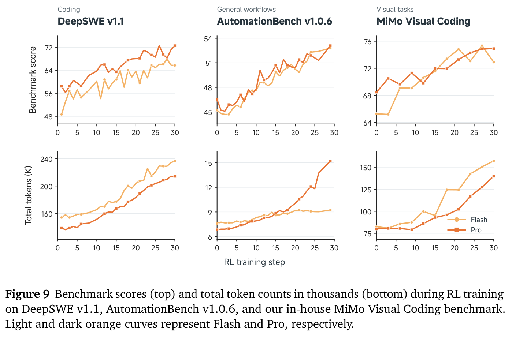
视觉 agent。我们使用内部开发的 MiMo Visual Coding 基准评估视觉编码能力，涵盖开放式设计与高保真视觉复刻。该基准包括 WebDev 和 Image2Code 等任务，分别涉及构建满足用户请求的网站，以及将参考图像转化为视觉上忠实的代码实现。
基线配置。所有可配置推理投入的基线模型均使用其支持的最高设置（max）评估。
我们在训练过程中监控性能变化，以验证扩大 RL 计算量的效果。如图 9 所示，尽管 checkpoint 间存在波动，Flash 和 Pro 在 RL 训练期间，均在 DeepSWE v1.1、AutomationBench v1.0.6 和 MiMo Visual Coding 上取得总体提升。这些收益通常伴随 token 总数增加，表明更强任务表现与更高 token 使用量共同发展。我们进一步研究多运行框架训练的影响，结果见图 10。专项训练改善了四个训练 mini-harness 和三个留出运行框架——codex、claude code 与 mini-swe-agent——上的 DeepSWE v1.1 表现。尽管 checkpoint 间存在波动，三个留出运行框架均在训练过程中改善，其平均 Pass@1 从约 50% 提升至 66%。训练与留出运行框架的平均性能差距也缩小，提供了学到的编码能力可跨运行框架实现迁移的证据。这些结果支持我们在 RL 期间使用轻量、模块化 mini-harness 引入受控多样性的设计。
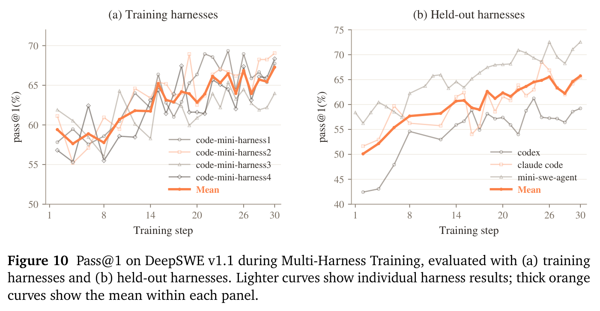
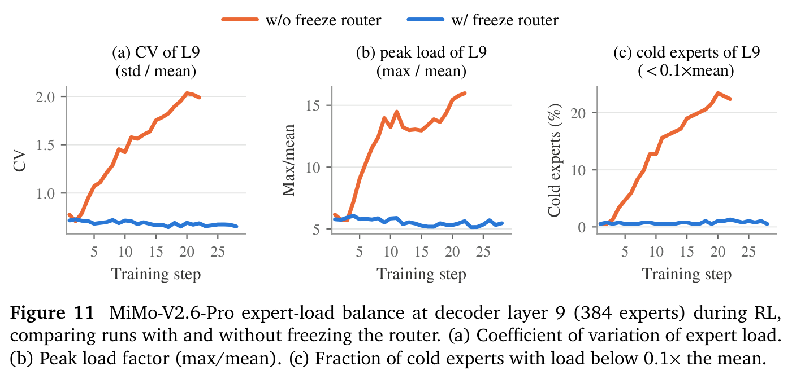
图 11 比较两次 MiMo-V2.6-Pro RL 训练，两者唯一区别是是否冻结 MoE 路由器，并追踪解码器第 9 层的三个专家负载统计量：变异系数（CV）、峰值负载因子（最大值／均值），以及负载低于均值 0.1 倍的冷专家比例（每步归一化负载）。路由器可训练时，我们观察到严重的负载坍塌：前 20 步三个指标均单调上升，CV 从 0.78 升至 2.0，峰值负载从 6 倍升至 16 倍，冷专家比例从 0.5% 升至 22%。为诊断原因，我们将第 20 步 checkpoint 的路由器参数恢复为 RL 前初始值，同时保持所有其他参数不变：负载平衡恢复至接近初始水平，而基准性能保持不变，表明坍塌由路由器漂移驱动，而非专家权重退化。因此，我们在 RL 训练中冻结路由器；冻结路由器的训练使三个统计量保持平稳（\(CV\approx 0.7\)，峰值负载≈5.5 倍，冷专家比例接近 1%），同时基准性能正常提升。
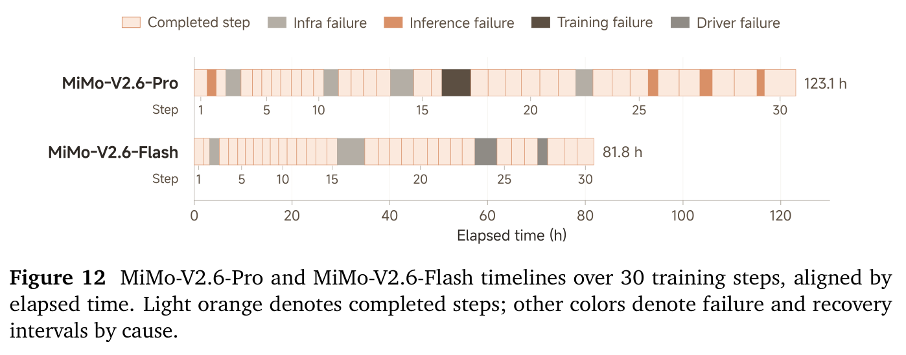
图 12 总结 MiMo-V2.6-Pro 和 MiMo-V2.6-Flash 训练中的中断。基础设施故障主要为 GPU 显存双比特错误（DBE）。Flash 还在第 15 和 16 步之间，因 Kubernetes 故障导致 Cyber 任务集群中的 pod 崩溃而重启。Pro 在第 14 步后因无法通过网络访问评分器而重启。Rollout 故障发生在部分 rollout 设置中：启动后，较短 rollout 先完成，导致预测式 Rollout 调度（§6.3）中的长度估计偏差，并耗尽 GPU 和固定页主机内存中的 KV 池。尽管早期进行了改进，后来某个运行框架在同一代码数据集上的 rollout 长度不到其他框架的一半，使重启后第二和第三步的估计偏斜。训练故障为 micro-batch 内 MoE 不平衡引发的 GPU 内存不足（OOM）：尽管完整 batch 相对平衡，某一层的一个 EP 进程接收到的 token 负载仍超过均值 30 倍。我们调整并行配置，降低激活内存占用，以容纳这些峰值。Flash 后期还出现驱动器故障：序列变长使每节点数据量超出主机内存容量，在打包期间发生失败。尽管打包已分布到多节点（§6.2），本地内存需求仍引发 CPU OOM 并中断训练。
混合 RL 之后，我们使用多前缀、多教师 on-policy 蒸馏（MOPD2），融合针对不同任务训练的教师能力，包括难以验证的任务。在 MiMo-V2-Flash 的 MOPD（Core Team et al., 2026; Ma et al., 2026）基础上，我们在具有适合 mixRL 教师的领域中保留自主学生 rollout（标准 MOPD），并加入以前缀为条件的单轮 rollout（Liao et al., 2026）。图 13 展示教师配置，以及标准蒸馏和前缀条件蒸馏工作流。
前缀来自教师 rollout（Teacher-Prefix OPD）或 SFT 数据（SFT-Prefix OPD）。具有 \(k\) 个助手轮次的轨迹提供 \(k\) 个完整历史前缀，每个前缀在相应轮次之前结束。学生从各前缀采样一个新轮次，无需重新生成此前交互。预先指定的教师以相同历史和学生此前 token 为条件，提供 token 级监督。
对于难以设计可靠 RL 奖励的开放领域任务，我们使用高质量合成示范训练 SFT 教师。面对长程任务中学生反复偏离后到达的历史，其训练可能覆盖有限（Xu et al., 2025）。因此，SFT-Prefix OPD
本句接原文第 25 页。
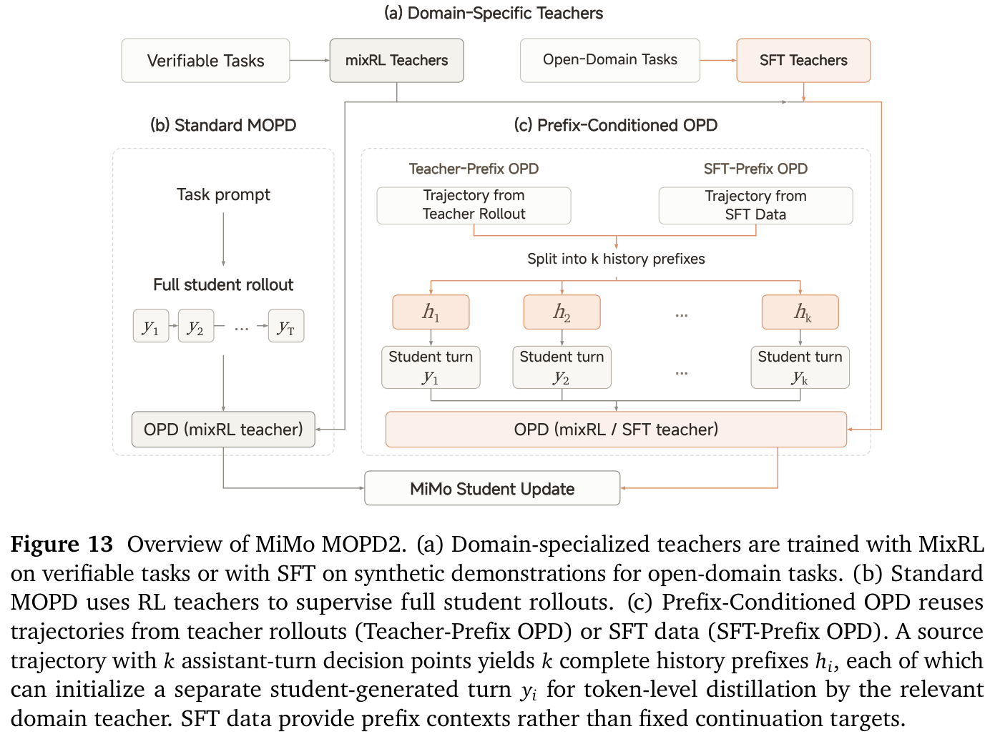
（接上页）从固定示范前缀开始每条 rollout，限制采样轮次之前的偏离。示范提供上下文，学生生成自己的续写，而非模仿固定响应。
MOPD2 进一步将经过 RL 训练的模型能力扩展到训练期间难以可靠验证的领域，包括环境复杂或验证器难以设计的任务，如长程游戏开发、科学研究和具身智能。MiMo-V2.6 的最终评估结果见表 3。MiMo-V2.6 系列相较 MiMo-V2.5 取得显著提升，在多个领域实现与前沿模型相当的性能。
MiMo-V2.6 系列将 RL 和 OPD 训练扩展至包含 agent rollout 的大型混合任务 batch。为支持灵活的 agent rollout 场景，我们定义执行模型与轨迹数据结构，并通过 Penalty Module 细化学习信号（§6.1）。在大 batch 下，我们实现 Harness Pool 托管多个运行框架、维持高 rollout 并发，并实现 Payload Porter 缓冲数万条携带大量路由与多模态数据的轨迹（§6.2）。我们实现 Sample Mixer，与动态采样器及部分 rollout 协同工作，稳定提供符合指定训练分布的训练 batch（§6.3）。为实现稳定、高效的 RL 训练，我们对齐训练与推理引擎间的 MoE 路由及 top-p 采样候选集合，同时针对 RL 工作负载优化两个引擎（§6.4）。
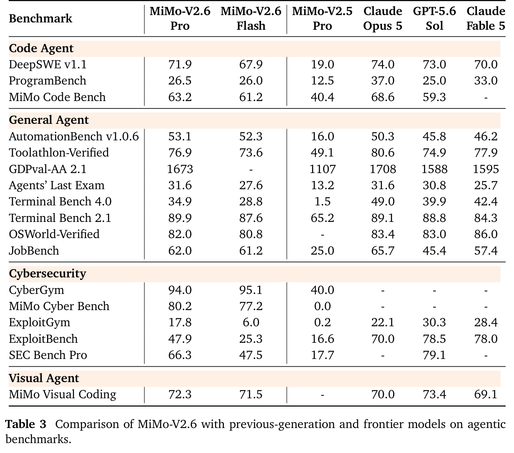
Agent rollout 跨越多个轮次与对话上下文，而结果奖励只提供粗粒度监督。因此，我们采用以 agent 为中心的执行模型，将轨迹数据组织成层级结构。在此结构内，可配置的 Penalty Module 应用损失掩码和优势塑形，针对局部模型错误，并将基础设施故障排除在训练信号之外。
我们将 rollout 从以推理为中心的设计转为以 agent 为中心：每个序列作为一个 Agent Loop 运行，拥有环境生命周期、管理其产生的对话，并按需调用推理引擎。生命周期涵盖初始化、交互、奖励评估（如运行测试用例）和清理。交互期间，循环暴露请求端点，外部 agent 通过调用该端点驱动 rollout。每段对话同时以字符串前缀和 token 序列保存。前缀匹配定位传入请求所延续的对话，仅将新增后缀分词后送入推理引擎，使其接口保持纯粹的 token 输入、token 输出。
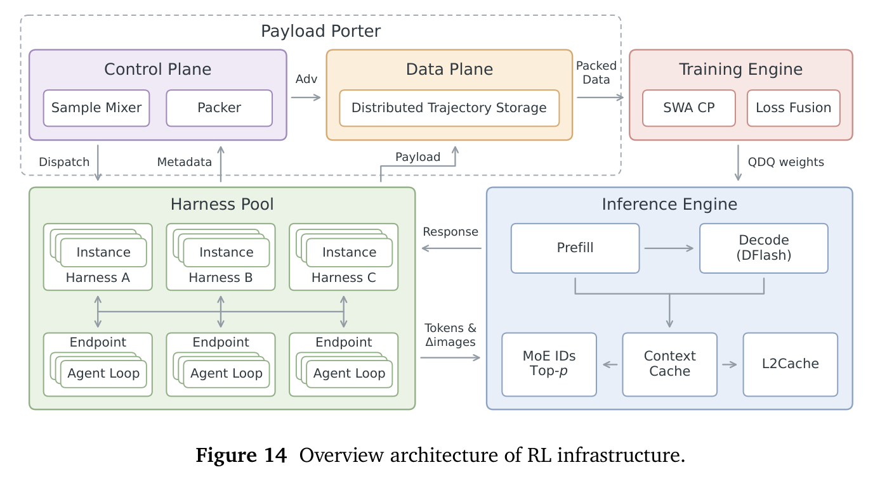
子 agent、上下文压缩和多个 agent 角色，会在一条 rollout 内产生并发对话分支。我们将轨迹数据组织为四层结构：Sample → Sequence → Context → Segment。Sample 是由 Sample Mixer（§6.3）派发的一个提示。在 GRPO（Shao et al., 2024）等组式算法中，Sample 生成一组 Sequence，整组共同被接受或拒绝。Sequence 是一次 Agent Loop 执行，可能包含多个并发 Context。Context 是一个对话分支，保存一系列 Segment；它是前缀匹配、KV cache 复用和训练数据导出的单位。Segment 是单个轮次——系统或用户消息、模型生成内容，或工具结果——只有模型生成的轮次参与损失。
组式算法将结果奖励均匀分摊到序列的所有模型生成 token。在上述层级中，信用很少均匀：有些轮次偏离任务路径或退化，有些失败与模型无关。为将信用分配到应有位置，我们将检测与其对训练的影响分离。Rule 使用手写逻辑或基于模型的评判器，判断片段、上下文或序列。例如，规则可以捕获不能归因于模型的基础设施故障、乱码 token 模式、调用不可用工具和重复。Strategy 将动作绑定到某个层级：mask 将命中内容排除于损失之外；advantage shaping 设置、缩放或扣减命中 token 的优势；monitor 仅记录指标。复合 early stop 策略在规则触发后立即停止 rollout，将结果奖励归零，对触发轮次与先前轮次分别施加动作，并屏蔽同级上下文。惩罚沿层级升级：没有存活模型轮次的上下文被丢弃，没有存活上下文的序列获得零优势，没有存活序列的样本被拒绝。训练中应用的具体惩罚见 §4.3.3。
将 RL 训练扩展到大 batch，会增加 rollout 并发以及轨迹数据的内存与通信成本。混合任务 batch 增加了另一异构维度：单 batch 混合多个运行框架，每个训练样本组绑定一个运行框架。在
本句接原文第 28 页。
（接上页）执行侧，Harness Pool 在持久多租户 actor 池中托管并发运行框架实例和 Agent Loop，框架代码库、agent 行为和环境设置独立配置。在数据侧，Payload Porter 让驱动器仅通过轻量元数据进行调度。重载荷只写入分布式存储一次，并在消费位置打包。多模态载荷同样拆分为元数据与像素，采用增量传输和负载均衡编码。
我们使用 Ray actor（Moritz et al., 2018），在集群中执行 agent 运行框架与 Agent Loop。若为每个运行框架实例和 Agent Loop 分配专属 Ray actor，每个 actor 都会在 Ray 全局控制存储（GCS）节点占用一个文件描述符，大 batch 会耗尽该节点文件描述符。我们改为运行固定大小的持久宿主 actor 池，每个宿主承载多个并发租户——模型侧为 Agent Loop，环境侧为运行框架实例。各租户保存自己的轨迹状态，按在途实例数均衡分配。宿主是单个进程，其租户共享一个事件循环。模型侧还共享一个请求端点、一个推理代理和一个 tokenizer；环境侧共享一个导入的运行框架代码库。共享事件循环可能让一次阻塞调用拖停所有租户，因此阻塞工作——环境操作与分词——在后台线程运行。这在并发 rollout 间摊薄进程和服务开销，支持更大的并发 batch，而无需同比增加 actor 数量。
我们分别配置运行框架代码库、agent 行为和环境设置，在单次训练中容纳多样任务。不同数据源可以使用不同代码库，同一来源内的各提示也可以有不同 agent 配置。每个训练样本组采用共同配置，以估计组相对优势。一个进程只能导入一个运行框架代码库，因此不同代码库运行于独立池。这些池按可配置份额分配固定的宿主 actor 总预算——启动时设定一次，独立于每步调度的训练数据混合。因此，运行框架多样性与 rollout 并发能在同一执行框架内扩展。
大规模 batch 必须同时缓冲数万个序列，每个都很重：除 token ID 与对数概率外，还携带 MoE 路由数据、top-p 采样索引及多模态数据。载荷量随序列数量和长度增长，若将所有载荷汇集到单个驱动节点，batch 大小就会受该节点内存限制。因此，我们将数据平面与控制平面分离，在 rollout 完成时拆分各序列：载荷一次性写入分布式键值存储（如 Ray object store 或 TransferQueue（Han et al., 2025）），驱动器则只用轻量元数据——标量奖励、各上下文长度及各载荷寻址键——执行全部调度。组完成时，仅从存储读取所需字段：供接受时钩子使用的少量列。若配置了组式评分器，它与 Agent Loop 并行完全异步运行——延迟被隐藏，结果允许滞后——返回时改写组奖励。随后，采样器仅凭元数据按通过率接受或拒绝组，钩子施加长度惩罚、计算组相对优势，并应用优势塑形。逐 token 优势写回存储；优势全部为零的组默认丢弃。在 OPD 下，奖励评估被教师评分替代：各轨迹发送到教师服务器，其分数异步收集至同一分布式存储。当各数据源都贡献完自己的 batch 份额，batch 产出时，yield 钩子将接受序列打包为 micro-batch，并分配到各进程，不接触任何张量。打包时，每个训练 TP 组配备一个打包器，服务组内所有
本句接原文第 29 页。
（接上页）进程。它从存储中未填充的行里，仅获取 CP 窗口涉及的行，并只裁出该窗口。结果作为单个只读内存副本在 TP 组内共享。这避免了驱动器上完整 batch 聚合，以及打包期间的稠密填充中间结果。
多模态载荷遵循相同的元数据／载荷拆分，但需额外注意：agent 跨轮次反复截屏、读取图像时，单条轨迹可累积数 GB 此类数据——存储成本高，历史增长时重复传输成本也高。因此，rollout 期间 Agent Loop 只传输请求间的多模态增量（§6.4）。训练时，每个图像项都必须经过视觉编码器。由于编码器在 TP 组中复制，而 LLM 主干分片，编码先按 DP 执行——图像项在进程间均衡分配，不依赖各序列 token 的分布位置。编码后，embedding 重新分配到持有相应 token 的进程。载荷本身留在分布式键值存储：负载均衡规划仅读取图像项元数据，像素仅在编码器计算时获取。这限制了冗余载荷移动，同时适应不均衡多模态工作负载。
自 MiMo-V2-Flash（Core Team et al., 2026）以来，我们一直维护 Data Scheduler，使各数据源达到指定训练分布，并结合动态采样器（Yu et al., 2025）与部分 rollout（Kimi Team, 2025）。混合任务 RL 必须在 rollout 时长与过滤率大幅变化时保持该分布，使每个数据源都有效参与训练。在分析的 25 个数据源中，平均生成 token 数与活跃 rollout 时长分别相差 90 倍和 66 倍（图 15），因此调度需要适应各来源工作负载。为应对这些挑战，我们实现 Sample Mixer，以四种机制填充指定训练分布：自适应 Rollout 并发设定各来源预算，自适应 Rollout 调度在预算内选择数据源，预测式 Rollout 派发将新 rollout 分配到各进程，样本重放覆盖启动与恢复阶段。
较慢来源需要更多并发 rollout，才能维持相同训练贡献。对来源 \(i\)，令 \(B_{i}\) 为每训练步保留样本组的目标数，\(r_{i}\) 为估计组接受率，\(t_{i}\) 为估计活跃 rollout 时长，包括模型生成与环境交互，但不含训练步间暂停。预期生成需求为 \(m_{i}=B_{i}/r_{i}\)；训练吞吐量固定时，所需并发随 \(t_{i}m_{i}\) 增长。我们为各来源分配 \((1+p_{i})m_{i}\) 组的调度预算，其中过采样比率 \(p_{i}\) 满足：
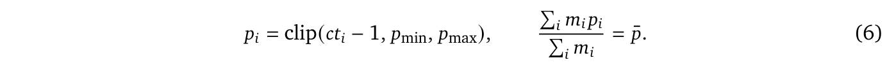
共享因子 \(c\) 使 \(p_{i}\) 按需求加权的均值保持为全局过采样比率 p̄，同时满足各来源边界。工作负载变化时，我们根据近期时间与接受统计量重新计算分配。在稳态下，并发需求随来源 rollout 时长及目标增加，随接受率增加而降低。
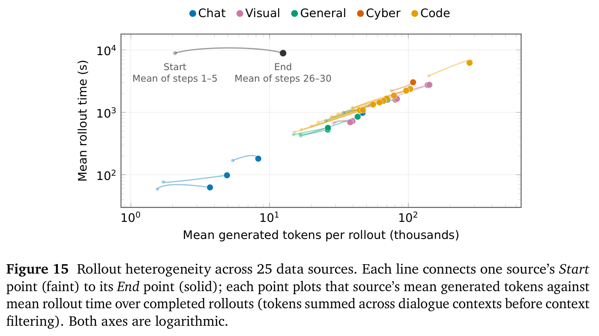
在这些预算内，调度平衡长期生成需求与当前训练 batch 的收集进度。如果当前 batch 已接受来源 \(i\) 的 \(A_{i}\) 个组，其调度权重为：
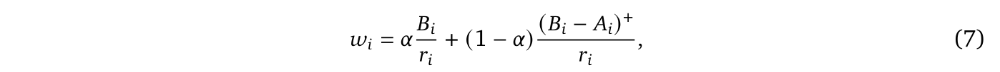
其中，\((x)_{+}=max(x,0)\)，\(\alpha \in [0,1]\)。目标项维持生成需求；缺额项优先处理仍有缺额的来源。这些权重驱动平滑加权轮询；稳态启动将 \(\alpha =0.5\) 与按 \(t_{i}m_{i}\) 比例分配的初始并发结合。图 16 的轨迹驱动模拟在固定并发上限、来源预算不构成约束时比较这些策略：在该工作负载中，缺额修正调度（\(\alpha =0.5\)）比基于缺额的调度（\(\alpha =0\)）更能稳定占用率，比基于目标的调度（\(\alpha =1\)）更能平衡收集。模拟时长按图 15 中各来源 End 点的平均 rollout 时间校准。
我们联合估计 KV 需求与预期推理并发，指导新 rollout 在各进程上的准入和分配。各来源先验估计 rollout 的总序列长度（输入与生成 token），跨上下文求和；这些先验根据完成的 rollout 更新，并用于估计 KV 需求。只有估计 KV 需求乘以安全余量倍数后，仍能放入目标进程剩余 GPU KV 容量，才允许 rollout 进入。分层缓存（§6.4）覆盖 HBM 和固定页主机内存池：两个层级共同保存已准入 rollout 的状态。估计 rollout 时间中用于环境执行的比例，将 rollout 并发转化为预期推理并发。我们用 CUDA graph 捕获所用的最大运行请求数限制此预期值，减少会延长 rollout 生命周期、增加陈旧度的排队延迟。为在两种约束下最大化吞吐量，贪心启发式选择可行进程中剩余容量最大的一个——容量取可用并发槽位与剩余 KV 容量的最小值，两者均换算为序列单位——每次分配后更新两个量。
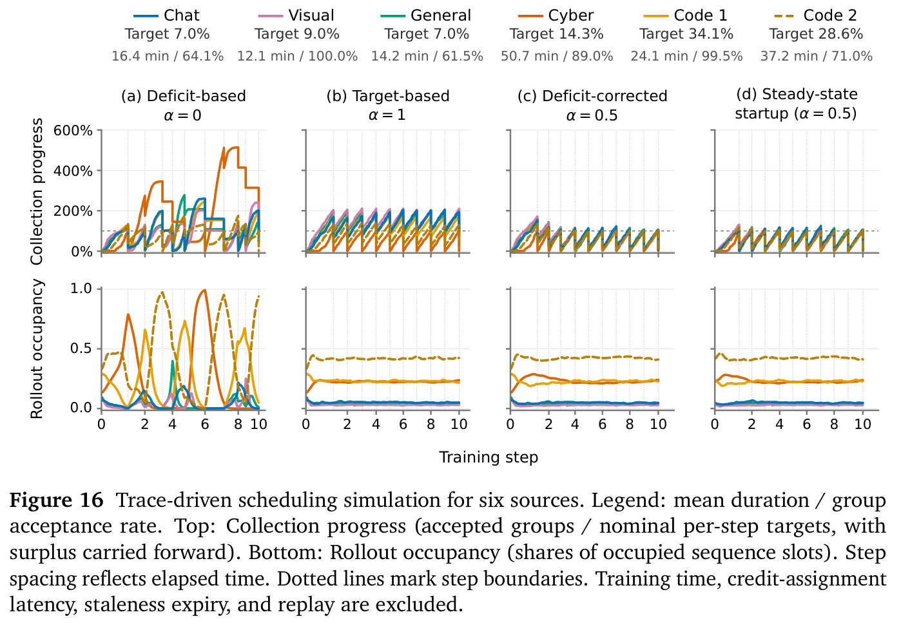
我们使用样本重放加快慢来源的初始收集。性能分析中，启动时的样本收集用时约为连续运行时的 1.8 倍。在慢来源内，较短 rollout 倾向先完成，即使满足各来源目标，也会使初始 batch 产生偏差。因此，在启动或 checkpoint 恢复后的第一个收集步骤，我们复用选定慢来源的已完成 rollout 组，按当前过滤规则填补各来源剩余缺额。全新启动重放假设存储 rollout 由本次运行的初始策略生成；恢复重放复用恢复前生成、仍处于各来源陈旧度限制内的已完成 rollout。将重放限制于第一个收集步骤，在保留指定训练分布的同时减少对慢来源的等待。
我们扩展 MiMo-V2-Flash（Core Team et al., 2026）的 RL 与 OPD 基础设施，继续分别使用 SGLang（Zheng et al., 2024）和 Megatron-LM（Shoeybi et al., 2019）作为推理与训练引擎。在 MiMo-V2.6 中，rollout 期间使用 MXFP4 作为专家数据类型。我们保持两个引擎在 MoE 路由与概率归一化上的对齐。在推理侧，Context Cache 除 KV 状态外，还跨轮次保存路由记录、采样候选集合与视觉输入，并将空闲状态卸载到主机内存。一个使用 RL rollout 日志训练的草稿模型，通过 speculative decoding 进一步加速生成。在训练侧，我们降低长序列的内存与通信成本。
为支持 MiMo-V2.6 系列，我们在每次参数更新后对专家应用量化—反量化（QDQ）。量化遵循 rollout 期间所用 MXFP4 Humming GEMM 内核（vLLM Project, 2026）的数值
本句接原文第 32 页。
（接上页）约束，因此两个引擎看到相同专家权重。即使参数相同，引擎间数值差异也可能改变离散专家选择；Rollout Routing Replay（R3）（Ma et al., 2025）记录 rollout 期间所用专家索引，并在训练期间重放，复现捕获的执行路径。Top-k 和 top-p 采样在受限候选集合而非完整词表上重新归一化；我们在 rollout 期间记录各 token 的候选集合（Liu et al., 2025a; The Microsoft AI Team, 2026），并在集合内重新归一化训练对数概率，与采样器的归一化一致。对于 top-p 采样，只有 GPU–CPU 传输是稠密的：我们传输固定形状、宽度覆盖完整词表的位图。固定形状避免 GPU–CPU 同步；完整宽度保证即使候选集合涵盖整个词表，也不会截断。后续所有阶段都是稀疏的：典型 top-\(p=0.97\) 时，候选集合平均不足五个 token。R3 与 top-p 候选集合重放的开销均可忽略，因为载荷保持紧凑，并在关键路径之外移动。
延续 MiMo-V2-Flash（Core Team et al., 2026）的请求级 KVCache，每个对话上下文有一个持久键：在同一策略版本内，后续轮次命中缓存 KV——包括生成 token——只对新后缀 prefill。上下文缓存是有意采用的有状态选择：缓存状态的寿命超出每个轮次。因此，专家索引和候选集合不会在中间轮次返回，仅在最终收集 rollout 时返回，避免碎片化的逐轮通信与处理。历史多模态输入无需重新哈希或发送：它们的视觉 token 已存在于缓存 KV 中。只有新引入的图像跨越进程边界；完整视觉输入仅 on-policy 更新或缓存未命中后发送。多轮环境交互将轨迹的实际时间分为 GPU 时间（生成）和工具时间（等待环境）；缓存的分层扩展在空间上体现这一时间划分——GPU 时间内，状态位于 HBM；工具时间内，位于固定页主机内存池。卸载与恢复在辅助 CUDA stream 而非计算 stream 上运行，不会阻塞生成。这样，HBM 尽可能用于正在运行的请求：decodingbatch越大，算术强度和计算利用率越高。
RL rollout 默认使用 block-6 DFlash 进行 speculative decoding，替代从 SFT 继承的 MTP 配置（MTP-3）。DFlash 最初基于 SFT 策略训练，之后在按 RL 训练分布重新采样的早期 RL rollout 日志上微调。在此默认配置下，平均接受长度比 MTP 配置高 31.3%。大 RL batch 时，我们按端到端吞吐量而非仅接受率选择草稿块大小。较小草稿块减少验证工作：混合任务 RL 评估中，block-6 相比 block-8 使全局平均吞吐量提高约 6%，平均接受长度变化很小。我们还采用低精度草稿计算（FP8）降低草稿生成开销。在我们的长上下文工作负载上，经 RL 适配的 FP8 DFlash 比基线的每节点吞吐量高约 10.3%。
我们在 1M token 上下文长度下训练 RL。MiMo-V2.6 将 128 token 滑动窗口层与全 attention 层交错排列。在 CP 下，滑动窗口层仅交换查询可达的 KV——最多一个窗口大小的片段——因此每层通信量由窗口大小而非序列长度限制。长序列也增加内存占用，MoE 专家不平衡进一步提高峰值内存。优化器状态保存在 CPU 内存，仅在参数更新时复制回来。全部损失计算融合到一个内核：策略 gradient 损失（带或不带 top-p 重新归一化）与 OPD 损失，可选计算熵、标签 logit 和 top-p 概率质量等指标。这种融合节省内存，并减少每步时间。
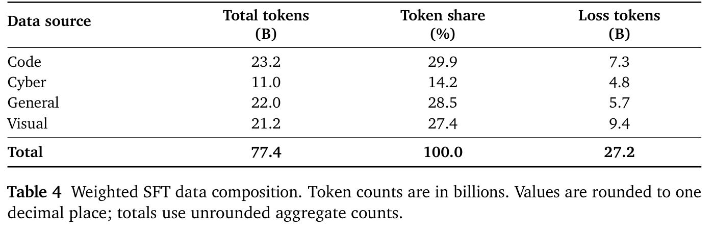
MiMo-V2.6 系列展示了强化学习显著推进 agent 能力的潜力。在此进展上继续前进，需要有能力的模型，以及将有意义任务与可靠验证器配对的高质量 RL 环境。分享这些资源与可复现基线，有助于开源社区持续研究与创新。因此，我们开源 MiMo-V2.6-Distill-Qwen-9B2，一个从 MiMo 蒸馏而来的小模型，作为进一步 RL 训练的共同起点。与模型一同发布的，还有高质量 RL 环境和端到端开源 RL 框架。本节利用这些发布资源，建立领域特定 GRPO 基线。我们还以编码为案例，按照 MiMo-V2.6 所述方法开展独立的多运行框架训练实验。实验显示多个领域均有显著收益，证明这些资源对 RL 训练的价值。
扩展 RL 计算量，并拓展环境与运行框架覆盖，为探索与学习创造更多机会。在这些设置中，有效探索依赖协调行动及响应环境反馈。因此，实现 agent RL 的潜力，首先需要坚实的任务求解能力基础。
为向开源社区提供这样的基础，我们开发 MiMo-V2.6-Distill-Qwen-9B，将 MiMo 的 agent 经验迁移到更小模型。我们使用 MiMo 生成的数据，对 Qwen3.5-9B（Qwen Team, 2025）进行 SFT，获得该模型；数据覆盖编码、通用领域、视觉和网络安全任务。混合数据总计 77.4B（774 亿）token，其中 27.2B（272 亿）为参与 SFT 目标的损失 token。表 4 总结数据组成。
所得 MiMo-V2.6-Distill-Qwen-9B checkpoint 在所报告评估中均优于 Qwen3.5-9B（表 6）。例如，SWE-bench Pro（Deng et al., 2025）从 32.0 提升至 44.6，AutomationBench 从 5.0% 提升至 30.3%。我们认为这些增强的任务求解能力，是通过 RL 进一步改进的有潜力基础。因此，我们将此 checkpoint 作为下文领域特定 GRPO 实验和多运行框架编码实验的共同初始化。
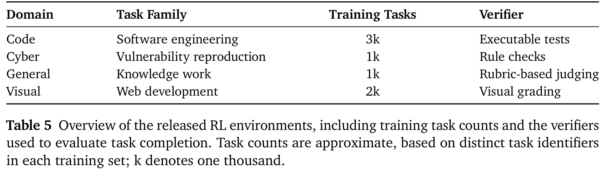
环境概览。表 5 总结我们在编码、网络安全、通用领域和视觉任务上发布的 RL 环境。四个训练集合计约 7k 个任务，通用领域集聚焦知识工作。训练资源还额外包含约 1k 个音乐生成任务，支持下文报告的 GRPO 实验。
RL 实验。从同一 MiMo-V2.6-Distill-Qwen-9B SFT checkpoint 出发，我们分别使用相应发布环境，对编码、网络安全、通用领域和视觉任务进行 GRPO 训练。除公开基准外，我们在四个内部集合上评估：软件工程的 MiMo Code Bench（mini）、漏洞复现的 MiMo Cyber Bench（mini）、知识工作的 MiMo General Bench（mini），以及网站开发的 MiMo Visual Coding（mini）。这些评估集遵循与对应训练集相同的任务分布。
表 6 显示，在表中报告的全部 11 项评估中，RL 均优于 SFT checkpoint，覆盖四个任务领域。SWE-bench Verified（Jimenez et al., 2024）从 61.1 升至 66.2，Terminal Bench 2.1（Merrill et al., 2026）从 37.1 提升至 52.8。OfficeQA Pro（Opsahl-Ong et al., 2026）从 19.5 提升至 24.8，Toolathlon-Verified（HKUST NLP, 2026）从 35.2 升至 38.0。MiMo Visual Coding（mini）从 64.0 提升至 72.4，MiMo Cyber Bench（mini）从 31.3 升至 47.0。除表 6 的任务外，我们还探索音乐创作等艺术创作与设计的新兴任务。在内部音乐基准上，分数从 SFT 后的 45.7 显著提升至 RL 后的 52.5。这些结果凸显高质量训练数据与强 SFT 初始化对通过 RL 进一步改进的价值。
多运行框架训练。表 6 的编码结果通过单运行框架 RL 获得。我们进一步开展独立编码实验，从同一 MiMo-V2.6-Distill-Qwen-9B SFT checkpoint 出发研究多运行框架训练。按照 MiMo-V2.6 所述方法，我们在四个 mini-harness 上联合优化模型，并在这些框架及另外三个留出框架上评估。表 7 在三项编码评估和七个 agent 运行框架上，比较 Qwen3.5-9B 与多运行框架 RL 前后的 MiMo-V2.6-Distill-Qwen-9B。MiMo-V2.6-Distill-Qwen-9B 在全部 21 个数据集—框架组合中均优于 Qwen3.5-9B，多运行框架 RL 又进一步改善每个组合。在 MiMo Code Bench（mini）上，七个运行框架相对于 SFT 的额外收益为 1.8 至 9.3 个百分点。
2 https://huggingface.co/XiaomiMiMo/MiMo-V2.6-Distill-Qwen-9B
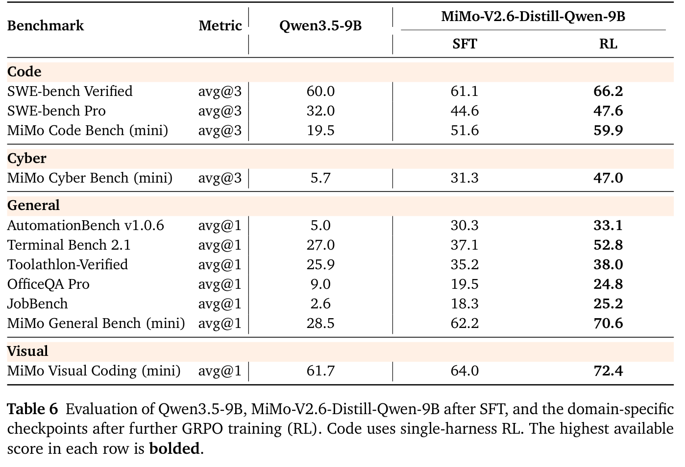
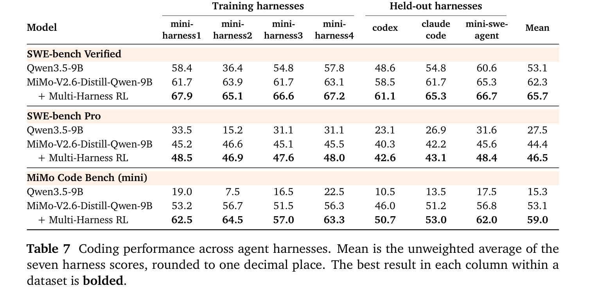
为更直观地展示 SFT 和 RL 方案如何逐步增强模型能力，我们提供一个网页开发案例研究（在该领域，视觉质量可直接感知），在图 17 中比较 Qwen3.5-9B、MiMo-V2.6-Distill-Qwen-9B（SFT）与 MiMo-V2.6-Distill-Qwen-9B（RL）生成的网站。如左列所示，Qwen3.5-9B 生成的网站视觉设计相对朴素，布局简单，
本句接原文第 36 页。
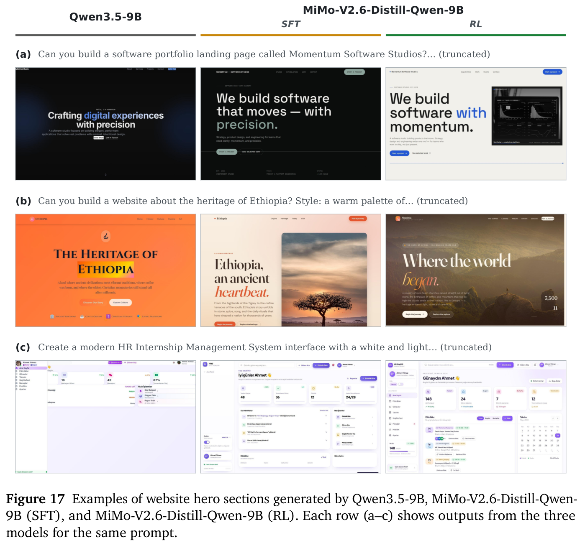
（接上页）图像使用很少。尤其是（c）中的人力资源管理界面存在明显布局问题。蒸馏后，MiMo-V2.6-Distill-Qwen-9B（SFT）（中列）生成的网站内容明显更丰富、配色更协调、图像素材融入更有效，例如（b）中埃塞俄比亚文化遗产页面的摄影元素。RL 训练后（右列），模型进一步提升，呈现最精致的结果：更细致的字体排版、视觉上更醒目的首屏区域（如（b）的日落图像），以及更完整、结构更合理的页面布局（如（c）中功能齐全的 HR 仪表盘，含侧边栏导航、日历组件和详细统计卡片）。这些逐步的定性改进与表 6 的定量轨迹（61.7 → 64.0 → 72.4）一致，共同证明先从 MiMo-V2.6 蒸馏、再进行 RL，对生成输出审美质量与功能完整性的累积收益。
本报告介绍 MiMo-V2.6 系列，以及通过大规模 agent 强化学习推进基础模型的实用方法。基于具备全模态能力的基础
本句接原文第 37 页。
（接上页）模型和以 agent 为中心的中期训练，我们沿三个维度扩展 RL：训练 batch 大小与吞吐量，环境与 agent 运行框架的多样性和复杂性，以及用于组内 agent 评分的计算量。这些进展由异步训练、混合任务 rollout 基础设施、训练—推理一致性机制，以及防范训练漂移和 reward hacking 的措施支撑。它们共同支持在长程交互中持续优化，同时提高解答质量与 token 效率。公开与内部基准的评估证明这一方法有效，MiMo-V2.6 在广泛 agent 任务中，实现了与前沿模型竞争的性能。
为使研究社区能够参与这一方向，我们发布 MiMo-V2.6-Distill-Qwen-9B，以及经过筛选的任务环境、验证器、端到端 RL 框架和可组合 mini-harness。跨领域和运行框架的一致 RL 收益，凸显这些资源作为进一步实验共同基础的价值。我们的工作向模型自我改进迈出切实一步，强调广泛探索、信息丰富的反馈，以及可扩展训练系统的共同重要性。我们希望这些开放资源支持可复现研究，以及朝着更有能力的通用 agent 不断累积进展。
中文标题附于完整原文书目信息之前；作者、出版信息与标识符保留原文，便于检索与引用。
中文标题：GDPval-AA v2.1 排行榜
Artificial Analysis. GDPval-AA v2.1 Leaderboard, 2026. URL https://artificialanalysis.ai/evaluations/gdpval-aa. Accessed September 21, 2026.
中文标题：SWE-rebench v2：大规模、语言无关的 SWE 任务收集
I. Badertdinov, M. Nekrashevich, A. Shevtsov, and A. Golubev. Swe-rebench v2: Language-agnostic swe task collection at scale, 2026. URL https://arxiv.org/abs/2602.23866.
中文标题：DFlash：用于极速 speculative decoding 的块扩散
J. Chen, Y. Liang, and Z. Liu. Dflash: Block diffusion for flash speculative decoding, 2026. URL https://arxiv.org/abs/2602.06036.
中文标题：MiMo-V2-Flash 技术报告
Core Team, B. Xiao, B. Xia, B. Yang, B. Gao, B. Shen, C. Zhang, C. He, C. Lou, F. Luo, et al. MiMo-V2-Flash technical report, 2026. URL https://arxiv.org/abs/2601.02780.
中文标题：SWE-bench Pro：AI agent 能解决长程软件工程任务吗？
X. Deng, J. Da, E. Pan, Y. Y. He, C. Ide, K. Garg, N. Lauffer, A. Park, N. Pasari, C. Rane, et al. Swe-bench pro: Can ai agents solve long-horizon software engineering tasks?, 2025. URL https://arxiv.org/abs/2509.16941.
中文标题：面向代码 agent RL 的组内 agent 评分与优势重分配
J. Dong, L. Zhao, Z. Yue, W. Ma, L. Zhang, L. Li, S. Li, Y. Song, B. Ye, and F. Luo. Groupwise agentic grading and advantage redistribution for code agent rl, 2026. URL https://arxiv.org/abs/2609.32577.
中文标题：通过 MTP 获得更好、更快的 LLM
F. Gloeckle, B. Y. Idrissi, B. Rozière, D. Lopez-Paz, and G. Synnaeve. Better & faster large language models via multi-token prediction. In Forty-first International Conference on Machine Learning, ICML 2024, Vienna, Austria, July 21-27, 2024. OpenReview.net, 2024. URL https://openreview.net/forum?id=pEWAcejiU2.
中文标题：AsyncFlow：用于高效 LLM 后训练的异步流式 RL 框架
Z. Han, A. You, H. Wang, K. Luo, G. Yang, W. Shi, M. Chen, S. Zhang, Z. Lan, C. Deng, et al. Asyncflow: An asynchronous streaming rl framework for efficient llm post-training, 2025. URL https://arxiv.org/abs/2507.01663.
中文标题：语义 attention 头专门化指导多模态 LLM 的混合 ViT attention
C. He, L. Li, S. Li, H. Lv, L. Kong, Q. Liu, T. Yang, and S. Ren. Semantic head specialization guides hybrid vit attention for multimodal llms, 2026. URL https://arxiv.org/abs/2608.28383.
中文标题：介绍 Toolathlon-Verified
HKUST NLP. Introducing Toolathlon-Verified, June 2026. URL https://toolathlon.xyz/docs/blog/toolathlon-verified.
中文标题附于完整原文书目信息之前；作者、出版信息与标识符保留原文，便于检索与引用。
中文标题：DeepSWE v1.1：面向前沿代码 agent 的更干净、更可复现的基准
W. Huang and P. Jiang. Deepswe v1.1: a cleaner, more reproducible benchmark for frontier coding agents, 2026. URL https://github.com/datacurve-ai/deep-swe.
中文标题：DeepSWE：用原创长程工程任务衡量前沿代码 agent
W. Huang, C. Lee, L. Tng, and S. Ge. Deepswe: Measuring frontier coding agents on original, long-horizon engineering tasks, 2026. URL https://arxiv.org/abs/2607.07946.
中文标题：SWE-bench：语言模型能解决真实 GitHub issue 吗？
C. E. Jimenez, J. Yang, A. Wettig, S. Yao, K. Pei, O. Press, and K. R. Narasimhan. Swe-bench: Can language models resolve real-world github issues? In The Twelfth International Conference on Learning Representations, ICLR 2024, Vienna, Austria, May 7-11, 2024. OpenReview.net, 2024. URL https://openreview.net/forum?id=VTF8yNQM66.
中文标题：Muon：神经网络隐藏层优化器
K. Jordan, Y. Jin, V. Boza, J. You, F. Cesista, L. Newhouse, and J. Bernstein. Muon: An optimizer for hidden layers in neural networks, 2024. URL https://kellerjordan.github.io/posts/muon/.
中文标题：Kimi k1.5：使用 LLM 扩展强化学习
Kimi Team. Kimi k1.5: Scaling reinforcement learning with llms, 2025. URL https://arxiv.org/abs/2501.12599.
中文标题：SEC-bench Pro：语言模型能解决长程软件安全任务吗？
H. Lee, J. Liu, D. Kim, Z. Zhang, C. S. Xia, and L. Zhang. Sec-bench pro: Can language models solve long-horizon software security tasks?, 2026. URL https://arxiv.org/abs/2605.26548.
中文标题：ExploitBench：LLM 网络安全 agent 的能力阶梯基准
S. Lee and D. Brumley. Exploitbench: A capability ladder benchmark for LLM cybersecurity agents, 2026. URL https://arxiv.org/abs/2605.14153.
中文标题：工具十项全能：面向多样、真实和长程任务执行的语言 agent 基准
J. Li, W. Zhao, J. Zhao, W. Zeng, H. Wu, X. Wang, R. Ge, Y. Cao, Y. Huang, W. Liu, J. Liu, Z. Su, Y. Guo, F. Zhou, L. Zhang, J. Michelini, X. Wang, X. Yue, S. Zhou, G. Neubig, and J. He. The tool decathlon: Benchmarking language agents for diverse, realistic, and long-horizon task execution. In International Conference on Learning Representations, 2026a. URL https://arxiv.org/abs/2510.25726.
中文标题：JobBench：使 agent 工作符合人类意愿
Y. Li, Y. Feng, Z. Xu, Z. Ma, K. Zheng, F. Jiang, X. Sun, R. Shao, Z. Chen, Y. Huang, X. Han, B. Lee, K. Xu, S. Zeng, H. Hua, X. Zhang, B. Alomair, R. Krishna, L. Zettlemoyer, P. W. Koh, B. Ramasubramanian, L. Niu, X. Yue, and R. Poovendran. JobBench: Aligning agent work with human will, 2026b. URL https://arxiv.org/abs/2605.26329.
中文标题：带前缀重放的多轮 on-policy 蒸馏
B. Liao, H. Dong, C. Monz, X. Xu, L. Dong, and F. Wei. Multi-turn on-policy distillation with prefix replay, 2026. URL https://arxiv.org/abs/2607.04763.
中文标题：Muown：用于 Muon 优化的行范数控制
K. Lion, F. Hübler, B. Li, A. Orvieto, and N. He. Muown: Row-norm control for Muon optimization, 2026. URL https://arxiv.org/abs/2605.10797.
中文标题：DeepSeek-V3 技术报告
A. Liu, B. Feng, B. Xue, B. Wang, B. Wu, C. Lu, C. Zhao, C. Deng, C. Zhang, C. Ruan, et al. Deepseek-v3 technical report, 2024. URL https://arxiv.org/abs/2412.19437.
中文标题：DeepSeek-V3.2：推进开放 LLM 的前沿
A. Liu, A. Mei, B. Lin, B. Xue, B. Wang, B. Xu, B. Wu, B. Zhang, C. Lin, C. Dong, et al. Deepseek-v3.2: Pushing the frontier of open large language models, 2025a. URL https://arxiv.org/abs/2512.02556.
中文标题：Muon 可扩展用于 LLM 训练
J. Liu, J. Su, X. Yao, Z. Jiang, G. Lai, Y. Du, Y. Qin, W. Xu, E. Lu, J. Yan, Y. Chen, H. Zheng, Y. Liu, S. Liu, B. Yin, W. He, H. Zhu, Y. Wang, J. Wang, M. Dong, Z. Zhang, Y. Kang, H. Zhang, X. Xu, Y. Zhang, Y. Wu, X. Zhou, and Z. Yang. Muon is scalable for LLM training, 2025b. URL https://arxiv.org/abs/2502.16982.
中文标题附于完整原文书目信息之前；作者、出版信息与标识符保留原文，便于检索与引用。
中文标题：通过对齐训练与推理路由器稳定 MoE 强化学习
W. Ma, H. Zhang, L. Zhao, Y. Song, Y. Wang, Z. Sui, and F. Luo. Stabilizing moe reinforcement learning by aligning training and inference routers, 2025. URL https://arxiv.org/abs/2510.11370.
中文标题：MOPD：用于 LLM 后训练能力整合的多教师 on-policy 蒸馏
W. Ma, J. Wei, L. Zhao, H. Zhang, B. Xiao, L. Li, Q. Yang, B. Gao, Y. Wang, R. Li, J. Dong, Z. Sui, and F. Luo. Mopd: Multi-teacher on-policy distillation for capability integration in llm post-training, 2026. URL https://arxiv.org/abs/2606.30406.
中文标题：Terminal-Bench
R. Marten, A. Shaw, I. Bercovich, B. Droste, T. Cerruti, S. Dillmann, R. Wang, D. Wahdany, A. Hart, K. Krauth, ScaleAI, Snorkel AI, Turing, gNucleus AI, Boolean AI, N. Carlini, S. Lyu, A. Wei, A. Khatua, B. Plüster, C. Dwivedi, C. Sutcliffe, Yuming, D. Tivris, D. Wang, H. W. Goh, H. Xing, H. Lin, I. Salia, J. Seol, J. Bao, J. Ouyang, J. Park, L. Walsh, L. Kong, M. Ivanov, M. Ubl, M. Liamets, O. Menis, P. Migdal, Q. Bao, R. Movva, R. Ben Chaim, N. Srinath, S. Bogdanik, S. Yadav, S. Benjamin, T. Kung, W. Hughes, X. Lan, H. Gupta, S. Mishra, C. Wang, H. He, J. Tu, K. Montgomery, Z. Tu, A. Naik, D. Mortensen, I. Zhang, Y. Mathur, E. Liu, K. Singh, M. Yu, S. Feng, V. Gangal, Z. Tao, S. Ruan, J. Mueller, J. Cabezas, J. Bauer, K. X. Li, R. Zhang, A. Feller, A. Madayan, L. Chen, B. Feuer, X. Li, B. Li, H. Raj, S. Galler, L. Shi, I. Segal, K. Buchanan, S. P., R. Desai, A. Schneider, C. Settles, X. Lin, M. Nezhurina, A. Wang, M. Kowalczyk, J.-X. Zhao, S. Satia, J. Hu, S. Atef, K. Chen, S. Vance, G. Segato, J. Jitsev, A. Dimakis, M. Merrill, A. Konwinski, and L. Schmidt. Terminal-Bench, 2026. URL https://github.com/harbor-framework/terminal-bench/releases/tag/v4.0.0. Software release, version 4.0.0.
中文标题：Terminal-Bench：在命令行界面中以困难、真实任务评估 agent
M. A. Merrill, A. G. Shaw, N. Carlini, B. Li, H. Raj, I. Bercovich, L. Shi, J. Y. Shin, T. Walshe, E. K. Buchanan, J. Shen, G. Ye, H. Lin, J. Poulos, M. Wang, M. Nezhurina, J. Jitsev, D. Lu, O. M. Mastromichalakis, Z. Xu, Z. Chen, Y. Liu, R. Zhang, L. L. Chen, A. Kashyap, J.-L. Uslu, J. Li, J. Wu, M. Yan, S. Bian, V. Sharma, K. Sun, S. Dillmann, A. Anand, A. Lanpouthakoun, B. Koopah, C. Hu, E. Guha, G. H. S. Dreiman, J. Zhu, K. Krauth, L. Zhong, N. Muennighoff, R. Amanfu, S. Tan, S. Pimpalgaonkar, T. Aggarwal, X. Lin, X. Lan, X. Zhao, Y. Liang, Y. Wang, Z. Wang, C. Zhou, D. Heineman, H. Liu, H. Trivedi, J. Yang, J. Lin, M. Shetty, M. Yang, N. Omi, N. Raoof, S. Li, T. Y. Zhuo, W. Lin, Y. Dai, Y. Wang, W. Chai, S. Zhou, D. Wahdany, Z. She, J. Hu, Z. Dong, Y. Zhu, S. Cui, A. Saiyed, A. Kolbeinsson, J. Hu, C. M. Rytting, R. Marten, Y. Wang, A. Dimakis, A. Konwinski, and L. Schmidt. Terminal-Bench: Benchmarking agents on hard, realistic tasks in command line interfaces, 2026. URL https://arxiv.org/abs/2601.11868.
中文标题：Ray：面向新兴 AI 应用的分布式框架
P. Moritz, R. Nishihara, S. Wang, A. Tumanov, R. Liaw, E. Liang, M. Elibol, Z. Yang, W. Paul, M. I. Jordan, et al. Ray: A distributed framework for emerging {AI} applications. In 13th USENIX symposium on operating systems design and implementation (OSDI 18), pages 561–577, 2018.
中文标题：OfficeQA Pro：用于端到端有据推理的企业基准
K. Opsahl-Ong, A. Singhvi, J. Collins, I. Zhou, C. Wang, A. Baheti, O. Oertell, J. Portes, S. Havens, E. Elsen, M. Bendersky, M. Zaharia, and X. Chen. Officeqa pro: An enterprise benchmark for end-to-end grounded reasoning, 2026. URL https://arxiv.org/abs/2603.08655.
中文标题：GDPval：评估 AI 模型在真实世界具有经济价值任务上的表现
T. Patwardhan, R. Dias, E. Proehl, G. Kim, M. Wang, O. Watkins, S. P. Fishman, M. Aljubeh, P. Thacker, L. Fauconnet, N. S. Kim, P. Chao, S. Miserendino, G. Chabot, D. Li, M. Sharman, A. Barr, A. Glaese, and J. Tworek. GDPval: Evaluating AI model performance on real-world economically valuable tasks, 2025. URL https://arxiv.org/abs/2510.04374.
中文标题：SWE-RL：用于 RL 的软件工程任务
PrimeIntellect. Swe-rl: Software engineering tasks for rl, 2026. URL https://huggingface.co/collections/PrimeIntellect/swe-rl.
中文标题：Muon 能微调使用 Adam 预训练的模型吗？
X. Qu, P. Huang, and S. Horvath. Can Muon fine-tune Adam-pretrained models?, 2026. URL https://arxiv.org/abs/2605.10468.
中文标题附于完整原文书目信息之前；作者、出版信息与标识符保留原文，便于检索与引用。
中文标题：Qwen3-Next：迈向极致训练与推理效率
Qwen Team. Qwen3-next: Towards ultimate training & inference efficiency. https://qwen.ai/blog?id=4074cca80393150c248e508aa62983f9cb7d27cd&from=research.latest-advancements-list, September 2025.
中文标题：Muon 用于预训练的实际效率
I. Shah, A. M. Polloreno, K. Stratos, P. Monk, A. Chaluvaraju, A. Hojel, A. Ma, A. Thomas, A. Tanwer, D. J. Shah, K. Nguyen, K. Smith, M. Callahan, M. Pust, M. Parmar, P. Rushton, P. Mazarakis, R. Kapila, S. Srivastava, S. Singla, T. Romanski, Y. Vanjani, and A. Vaswani. Practical efficiency of Muon for pretraining, 2025. URL https://arxiv.org/abs/2505.02222.
中文标题：DeepSeekMath：推进开放语言模型数学推理的极限
Z. Shao, P. Wang, Q. Zhu, R. Xu, J. Song, X. Bi, H. Zhang, M. Zhang, Y. K. Li, Y. Wu, and D. Guo. Deepseekmath: Pushing the limits of mathematical reasoning in open language models, 2024. URL https://arxiv.org/abs/2402.03300.
中文标题：AutomationBench
D. Shepard and R. Salimans. AutomationBench, 2026. URL https://arxiv.org/abs/2604.18934.
中文标题：Megatron-LM：利用模型并行训练数十亿参数语言模型
M. Shoeybi, M. Patwary, R. Puri, P. LeGresley, J. Casper, and B. Catanzaro. Megatron-lm: Training multi-billion parameter language models using model parallelism, 2019. URL https://arxiv.org/abs/1909.08053.
中文标题：agent 的最后一场考试（Agents’ Last Exam）
Y. Sun, X. Han, W. Zhang, Y. Pang, T. Wang, Y. Cao, Y. Huang, C. Duroiu, H. Zhang, J. Lin, W. Zhang, T. Zeng, Y. Yan, B. Liu, H. Wen, M. Xu, X. Liu, Z. Chen, W. Shi, A. Dsouza, V. S. Chen, P. Bryant, C. Boettiger, Y. Rangan, B. Rothenberg, K. Steinfeld, A. Rao, T. Schneider, G. Yannakakis, L. Zanna, K. Ozbay, I. Sim, T. Zohdi, G. E. Karniadakis, J. Gallant, T. HeadGordon, Y. Li, W. Deng, T. Sun, H. Wang, Z. Wang, J. Xu, C. Y. Liu, Y. Cheng, R. Hu, A. Bacho, S. Cao, Z. Qin, Y. Chen, H. Fan, H. Liu, L. Zeng, S. M. Bharadwaj, L. Gong, Y. Yang, M. Song, R. Wang, Z. Zhang, H. Bao, S. Lu, J. Tu, Z. Wang, Z. Zhang, Z. Chen, Y. Jiang, Z. Li, B. Lyu, C. Ma, P. Xu, B. Zhang, S. Gu, H. Hua, H. Li, W. Liao, C. Liu, J. Peng, H. Sun, Z. Xu, B. Chen, J. Cheng, Y. Jiang, K. Kuang, Y. Li, Y. Pan, Z. Rao, A. Schubert, Y. Shen, V. Siu, X. Sun, K. Zhang, X. Zhang, Y. Zhu, I. S. Chandok, L. Ding, J. Fan, A. Glover, J. Hu, Y. Hu, W. Huang, Z. Jiang, H. Jin, L. Kim, M. Liu, Y. Liu, A. Rafiei, X. Shen, K. Sun, S. Sun, T. Sun, E. Wang, Y. Wang, H. Xing, S. Xu, Y. Xu, Z. Xu, Z. Yan, B. Yuan, R. Zhang, Y. Zhang, Z. Zhao, Liana, S. B. Antu, H. Bai, C. Bosio, J. Cavanagh, P. Cavazos-Rehg, T. Chen, X. Chen, Y. Chen, C. Zhu, C. Dai, S. D. Castro, Y. Deng, K. Dhole, J. Ding, C. Du, Z. Du, H. Fan, R.-Z. Fan, H. Fu, S. Gu, Y. Gu, C. Guo, B. Huang, B. Huang, R. Jaiswal, Z. Jiang, R. Jin, E. Kasson, X. Lan, J. Lee, D. Lei, C. Li, D. Li, H. Li, H. Li, J. Li, X. Li, Y. Li, Y. Li, Y. Li, Z. Li, W. Liang, L. Liao, K. Q. Lin, A. Z. Liu, C. Liu, J. Liu, K. Liu, X. Liu, P. Lu, W. Lv, Y. Lyu, Q. Mang, K. Montgomery, Y. Nie, R. Ning, J. Overwiening, X. Pan, L. Paraboschi, C. F. Park, J. Purnomo, S. Rajwal, S. Rankin, B. Ren, Y. Rong, H. Shang, V. Shaw, F. Shen, J. Shen, M. Shi, S. Qiu, H. Yao, T. Shi, J. So, V. Susoy, H. Szlyk, H. Wang, J. Wang, W. Wang, X. Wang, Z. Wang, D. Wong, A. Wu, D. Wu, F. Wu, M. M. Wu, Y. Wu, Y. Wu, Y. Wu, Q. Wuwu, W. Xiao, Y. Xiong, F. Xu, R. Xu, M. Yan, B. Yang, J. Yang, S. Yang, X. Yang, Y. Yang, H. Ye, X. Yu, Z. Yu, C. Zhang, C. Zhang, H. Zhang, H. Zhang, J. Zhang, K. Zhang, S. Zhang, W. Zhang, W. Zhang, Y. Zhang, Y. Zhang, B. Zhao, Q. Zhao, Y. Zhao, Y. Zheng, L. Zhou, T. Zhou, S. Zhu, S. Zhu, Y. Zhu, Y. Zhu, J. Zuo, C. Cai, H. Casademunt, W. Chen, C. Cheng, N. Deng, R. Fu, T. Fu, Y. Han, H. Ren, Z. He, Q. Jin, L. Li, Y. Li, S. Liu, L. Lu, L. Zhou, S. Mukherjee, Y. Ouyang, Y. Ren, D. Shi, H. Wu, Z. Wu, H. Yao, Z. Yi, J. Yu, R. Zhan, H. Zhou, B. Zhu, J. Zhu, A. Yuille, Y. Liu, R. A. Poldrack, J. Li, Z. Li, M. Tao, J. Huang, W. Shi, C. Spanos, L. Sun, C. Wang, O. Xu, Z. Dong, H. Gomez, A. Caliskan, A. Emami, H. Hu, Z. Li, L. Liu, M. Niu, Y. Shao, J. Sun, M. Tolonen, T. Wang, S. Das, Y. Gao, W. Guo, E. J. Schneider, Z. Lu, Y. Ma, M. Mueller, R. Poovendran, S. Sojoudi, Y. Zhu, and D. Song. Agents’ last exam, 2026. URL https://arxiv.org/abs/2606.05405.
中文标题附于完整原文书目信息之前；作者、出版信息与标识符保留原文，便于检索与引用。
中文标题：SWE-Lego：推进软件 issue 解决中 SFT 的极限
C. Tao, J. Chen, Y. Jiang, K. Kou, S. Wang, R. Wang, X. Li, S. Yang, Y. Du, J. Dai, Z. Mao, X. Wang, L. Shang, and H. Bai. Swe-lego: Pushing the limits of supervised fine-tuning for software issue resolving, 2026. URL https://arxiv.org/abs/2601.01426.
中文标题：MAI-Thinking-1：构建一台爬山机器
The Microsoft AI Team. MAI-Thinking-1: Building a hill-climbing machine. Technical report, Microsoft AI, 2026. URL https://microsoft.ai/pdf/mai-thinking-1.pdf.
中文标题：attention 就是你所需要的一切
A. Vaswani, N. Shazeer, N. Parmar, J. Uszkoreit, L. Jones, A. N. Gomez, L. Kaiser, and I. Polosukhin. Attention is all you need. In I. Guyon, U. von Luxburg, S. Bengio, H. M. Wallach, R. Fergus, S. V. N. Vishwanathan, and R. Garnett, editors, Advances in Neural Information Processing Systems 30: Annual Conference on Neural Information Processing Systems 2017, December 4-9, 2017, Long Beach, CA, USA, pages 5998–6008, 2017. URL https://proceedings.neurips.cc/paper/2017/hash/3f5ee243547dee91fbd053c1c4a845aa-Abstract.html.
中文标题：Humming
vLLM Project. Humming. https://github.com/vllm-project/humming/releases/tag/v0.1.15, September 2026. Version 0.1.15, GitHub repository, commit a74973b5079e42ef861720b62f847ce9d33447f5; accessed 2026-09-19.
中文标题：CyberGym：通过大规模真实漏洞评估 AI agent 的网络安全能力
Z. Wang, T. Shi, J. He, M. Cai, J. Zhang, and D. Song. Cybergym: Evaluating AI agents’ cybersecurity capabilities with real-world vulnerabilities at scale, 2025. URL https://arxiv.org/abs/2506.02548.
中文标题：ExploitGym：AI agent 能将安全漏洞转化为真实攻击吗？
Z. Wang, N. Schiller, H. Li, S. S. Narayana, M. Nasr, N. Carlini, X. Qi, E. Wallace, E. Bursztein, L. Invernizzi, K. Thomas, Y. Shoshitaishvili, W. Guo, J. He, T. Holz, and D. Song. Exploitgym: Can AI agents turn security vulnerabilities into real attacks?, 2026. URL https://arxiv.org/abs/2605.11086.
中文标题：MiMo：释放语言模型的推理潜力——从预训练到后训练
B. Xia, B. Shen, D. Zhu, D. Zhang, G. Wang, H. Zhang, H. Liu, J. Xiao, J. Dong, L. Zhao, et al. Mimo: Unlocking the reasoning potential of language model–from pretraining to posttraining, 2025. URL https://arxiv.org/abs/2505.07608.
中文标题：MiMo-Audio：音频语言模型是少样本学习者
L. Xiaomi. Mimo-audio: Audio language models are few-shot learners, 2025. URL https://arxiv.org/abs/2512.23808.
中文标题：OSWorld：在真实计算机环境中以开放式任务评估多模态 agent
T. Xie, D. Zhang, J. Chen, X. Li, S. Zhao, R. Cao, T. J. Hua, Z. Cheng, D. Shin, F. Lei, Y. Liu, Y. Xu, S. Zhou, S. Savarese, C. Xiong, V. Zhong, and T. Yu. Osworld: Benchmarking multimodal agents for open-ended tasks in real computer environments. In A. Globersons, L. Mackey, D. Belgrave, A. Fan, U. Paquet, J. M. Tomczak, and C. Zhang, editors, Advances in Neural Information Processing Systems 37: Annual Conference on Neural Information Processing Systems 2024, NeurIPS 2024, Vancouver, BC, Canada, December 10 - 15, 2024, 2024. doi: 10.52202/079017-1650. URL http://papers.nips.cc/paper_files/paper/2024/hash/5d413e48f84dc61244b6be550f1cd8f5-Abstract-Datasets_and_Benchmarks_Track.html.
中文标题：介绍 OSWorld-Verified
XLANG Lab. Introducing OSWorld-Verified, July 2025. URL https://xlang.ai/blog/osworld-verified.
中文标题：推测式知识蒸馏：通过交错采样弥合教师与学生之间的差距
W. Xu, R. Han, Z. Wang, L. T. Le, D. Madeka, L. Li, W. Y. Wang, R. Agarwal, C. Lee, and T. Pfister. Speculative knowledge distillation: Bridging the teacher-student gap through interleaved sampling. In The Thirteenth International Conference on Learning Representations, ICLR 2025, Singapore, April 24-28, 2025. OpenReview.net, 2025. URL https://openreview.net/forum?id=EgJhwYR2tB.
中文标题附于完整原文书目信息之前；作者、出版信息与标识符保留原文，便于检索与引用。
中文标题：ProgramBench：语言模型能从零重建程序吗？
J. Yang, K. Lieret, J. Ma, P. Thakkar, D. Pedchenko, S. Sootla, E. McMilin, P. Yin, R. Hou, G. Synnaeve, D. Yang, and O. Press. Programbench: Can language models rebuild programs from scratch?, 2026a. URL https://arxiv.org/abs/2605.03546.
中文标题：什么使交互轨迹对训练终端 agent 有效？
S. Yang, C. Tao, J. Chen, T. Yu, R. Wang, Y. Jiang, Y. Du, W. Xu, J. Xiong, T. Wu, L. Shang, X. Li, N. Wong, and H. Bai. What makes interaction trajectories effective for training terminal agents?, 2026b. URL https://arxiv.org/abs/2606.03461.
中文标题：CodeMidas：从代码本身扩展 agent 编码 RL 环境
B. Ye, L. Li, S. Li, Z. Yue, L. Zhang, H. Lv, Y. Liu, W. Ma, H. Tian, R. Li, J. Dong, Y. Zhao, X. Deng, H. Zhang, L. Zhao, Q. Liu, L. Kong, T. Yang, and F. Luo. CodeMidas: Scaling agentic coding rl environments from code itself, 2026. URL https://arxiv.org/abs/2609.22068.
中文标题：DAPO：大规模开源 LLM 强化学习系统
Q. Yu, Z. Zhang, R. Zhu, Y. Yuan, X. Zuo, Y. Yue, W. Dai, T. Fan, G. Liu, J. Liu, L. Liu, X. Liu, H. Lin, Z. Lin, B. Ma, G. Sheng, Y. Tong, C. Zhang, M. Zhang, R. Zhang, W. Zhang, H. Zhu, J. Zhu, J. Chen, J. Chen, C. Wang, H. Yu, Y. Song, X. Wei, H. Zhou, J. Liu, W. Ma, Y. Zhang, L. Yan, Y. Wu, and M. Wang. DAPO: an open-source LLM reinforcement learning system at scale. In D. Belgrave, C. Zhang, L. N. Montoya, H. Lin, R. Pascanu, P. Koniusz, M. Ghassemi, N. Chen, I. V. M. Ruíz, and A. Loaiza-Bonilla, editors, Advances in Neural Information Processing Systems 38: Annual Conference on Neural Information Processing Systems 2025, NeurIPS 2025, San Diego, CA, USA, December 2-7, 2025 / Mexico City, Mexico, November 30 - December 5, 2025, 2025. URL http://papers.nips.cc/paper_files/paper/2025/hash/a4277440d50f1f15d2cb4c14f7e0c0d2-Abstract-Conference.html.
中文标题：MiMo-VL 技术报告
Z. Yue, Z. Lin, Y. Song, W. Wang, S. Ren, S. Gu, S. Li, P. Li, L. Zhao, L. Li, et al. Mimo-vl technical report, 2025. URL https://arxiv.org/abs/2506.03569.
中文标题：Multi-SWE-bench：用于 issue 解决的多语言基准
D. Zan, Z. Huang, W. Liu, H. Chen, S. Xin, L. Zhang, Q. Liu, A. Li, L. Chen, X. Zhong, S. Liu, Y. Xiao, L. Chen, Y. Zhang, J. Su, T. Liu, R. Long, M. Ding, and L. Xiang. Multi-swebench: A multilingual benchmark for issue resolving. In D. Belgrave, C. Zhang, L. N. Montoya, H. Lin, R. Pascanu, P. Koniusz, M. Ghassemi, N. Chen, I. V. M. Ruíz, and A. LoaizaBonilla, editors, Advances in Neural Information Processing Systems 38: Annual Conference on Neural Information Processing Systems 2025, NeurIPS 2025, San Diego, CA, USA, December 2-7, 2025 / Mexico City, Mexico, November 30 - December 5, 2025, 2025. URL http://papers.nips.cc/paper_files/paper/2025/hash/5afa9cb1e917b898ad418216dc726fbd-Abstract-Datasets_and_Benchmarks_Track.html.
中文标题：沉浸于 GitHub 宇宙：将代码 agent 扩展至精通水平
J. Zhao, G. Chen, F. Meng, M. Li, J. Chen, H. Xu, Y. Sun, X. Zhao, R. Song, Y. Zhang, P. Wang, C. Chen, J. Wen, and K. Jia. Immersion in the github universe: Scaling coding agents to mastery, 2026. URL https://arxiv.org/abs/2602.09892.
中文标题：SGLang：高效执行结构化语言模型程序
L. Zheng, L. Yin, Z. Xie, C. Sun, J. Huang, C. H. Yu, S. Cao, C. Kozyrakis, I. Stoica, J. E. Gonzalez, C. W. Barrett, and Y. Sheng. Sglang: Efficient execution of structured language model programs. In A. Globersons, L. Mackey, D. Belgrave, A. Fan, U. Paquet, J. M. Tomczak, and C. Zhang, editors, Advances in Neural Information Processing Systems 37: Annual Conference on Neural Information Processing Systems 2024, NeurIPS 2024, Vancouver, BC, Canada, December 10 - 15, 2024, 2024. URL http://papers.nips.cc/paper_files/paper/2024/hash/724be4472168f31ba1c9ac630f15dec8-Abstract-Conference.html.
我们衷心感谢所有贡献者的宝贵支持与付出，包括 Xiaomi Data Platform、CloudML、NGK、MiChat、Mify、MiKS 和 LLM-Plus 团队，以及本文未明确列出的人员。每个角色内的作者按名字的逆字母序排列。
Zongming Qiao, Ziyue Hua, Zirui Ou, Zihao Yue, Zihan Jiang, Zhuo Huang, Zhiyang Chen, Zhixian Zheng, Zhipeng Xu, Zhengrui Ma, Yuyang Hu, Yuhang Dong, Yuechen Zhang, Yudong Wang, Yuanxin Liu, Yixin Yang, Yishuo Cai, Yikai Zhao, Yihan Yan, Yifan Zhang, Yifan Song, Xiyu Wei, Xing Zhang, Xin Zhang, Xiaoqian Liu, Xiaodong Ji, Xiangwei Deng, Xueyu Guo, Wenhan Ma, Weimin Xiong, Weikun Wang, Weiji Zhuang, Shuo Liu, Shuhuai Ren, Shuhao Gu, Shimao Chen, Shijie Cao, Shihua Yu, Shicheng Li, Shengjie Zhou, Shaolei Zhang, Rang Li, Qiying Wang, Qingkai Fang, Qianli Chen, Minzheng Wang, Liwen Wang, Linli Yao, Linghao Zhang, Liangyu Cheng, Liang Zhao, Lei Li, Jinhao Dong, Jinyu Xiang, Jianyu Wei, Jiangshan Duo, Huaqiu Liu, Huanjie Fan, Hongyi Guan, Hongshen Xu, Hao Tian, Hanyu Li, Hailin Zhang, Gang Wang, Fuli Luo†, Feng Wei, Dong Zhang, Dawei Zhu, Chiheng Lou, Chenhong He, Chenhao He, Chenghua Liu, Bowen Ye, Bowen Shen, Boshen Xu, Bo Yang, Bingquan Xia, Bangjun Xiao, Baixuan Xu
Zhouxiang Mao, Zhiyang Zhang, Zhixiang Xu, Zhenru Lin, Zhengju Tang, Zhaojun Huang, Yuzhe Weng, Yuxing Xiang, Yuxiao Li, Yuheng Yang, Yuhang Wang, Yuchen Liu, Yuanyuan Tian, Yuanliang Dong, Yu Cheng, Yongzhe He, Yongshun Liang, Yong Wang, Yiyan Wang, Yitian Gong, Yijie Zhang, Yanshu Xin, Xun Zhang, Xingjian Zhao, Wenyu Yang, Wenshan Huang, Wenhao Li, Tingwei Huang, Tianyu Yu, Tianyang Lu, Taoyu Yang, Sinan Du, Shutong Tian, Shulin Du, Shengfan Wang, Shanchuan Fang, Qihao Zhang, Qibin Yang, Qian Yu, Qian Tu, Pengrong Xie, Peipei Wang, Peidian Li, Minkun Guo, Mingchen Shao, Luohan Gao, Lijie Wang, Liang Shi, Kaiqi Chen, Kaiming Liu, Kaifei Wang, Kai Yang, Jinlong Xue, Jiechen Zhang, Jiaxuan Liu, Hongxu An, Hao Peng, Hanglong Lü, Guonan Wang, Feiyu Yang, Fanyu Cao, Fangyue Liu, Fan Cui, Cong Wang, Chun Chen, Chenxu Bai, Chengxuan Zhu, Chenghua Wang, Boyi Zeng
† 通讯作者